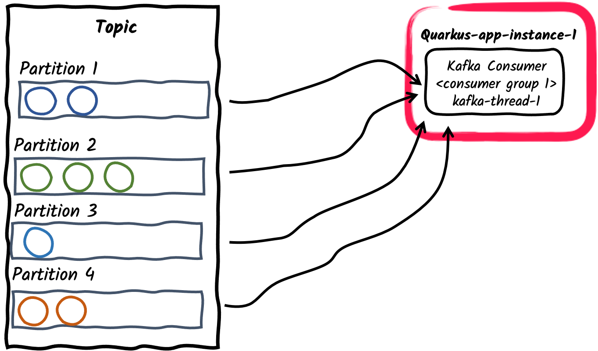

Guia de referência do Apache Kafka
Este guia de referência demonstra como sua aplicação Quarkus pode utilizar a Mensageria Reativa do SmallRye para interagir com o Apache Kafka.
1. Introdução
O Apache Kafka é uma plataforma popular de streaming de eventos distribuídos de código aberto. É comumente usado para pipelines de dados de alto desempenho, análise de streaming, integração de dados e aplicações de missão crítica. Semelhante a uma fila de mensagens ou a uma plataforma de mensagens corporativas, ele permite que você:
-
publique (escreva) e assine (leia) fluxos de eventos, chamados de registros.
-
armazene fluxos de registros de forma durável e confiável dentro de tópicos.
-
processe fluxos de registros à medida que eles ocorrem ou retrospectivamente.
E toda esta funcionalidade é fornecida de uma forma distribuída, altamente escalável, elástica, tolerante a falhas e segura.
2. Extensão Quarkus para o Apache Kafka
O Quarkus oferece suporte ao Apache Kafka por meio da estrutura Mensageria Reativa do SmallRye. Com base na especificação 2.0 da Mensageria Reativa do Eclipse MicroProfile, ele propõe um modelo de programação flexível que une o CDI e a orientação a eventos.
|
Este guia fornece uma visão detalhada do Apache Kafka e da estrutura da Mensageria Reativa do SmallRye. Para um início rápido, dê uma olhada em Introdução à Mensageria Reativa do SmallRye com Apache Kafka. |
Você pode adicionar as extensões smallrye-reactive-messaging-kafka ao seu projeto executando o seguinte comando no diretório base do seu projeto:
quarkus extension add 'smallrye-reactive-messaging-kafka'./mvnw quarkus:add-extension -Dextensions='smallrye-reactive-messaging-kafka'./gradlew addExtension --extensions='smallrye-reactive-messaging-kafka'Isto irá adicionar o seguinte trecho no seu arquivo de build:
<dependency>
<groupId>io.quarkus</groupId>
<artifactId>quarkus-smallrye-reactive-messaging-kafka</artifactId>
</dependency>implementation("io.quarkus:quarkus-smallrye-reactive-messaging-kafka")|
A extensão inclui |
3. Configurando o Conector Kafka Smallrye
Como a estrutura da Mensageria Reativa do Smallrye suporta diferentes backends de mensagens, como Apache Kafka, AMQP, Apache Camel, JMS, MQTT, etc., ela usa um vocabulário genérico:
-
As aplicações enviam e recebem mensagens. Uma mensagem envolve uma conteúdo e pode ser estendida com alguns metadados. Com o conector Kafka, uma mensagem corresponde a um registro Kafka.
-
As mensagens transitam nos canais. Os componentes da aplicação ligam-se aos canais para publicar e consumir mensagens. O conector Kafka mapeia canais para tópicos Kafka.
-
Os canais são ligados a backends de mensagens através de conectores. Os conectores são configurados para mapear as mensagens de entrada para um canal específico (consumido pela aplicação) e recolher as mensagens de saída enviadas para um canal específico. Cada conector é dedicado a uma tecnologia de mensagens específica. Por exemplo, o conector que lida com o Kafka tem o nome de
smallrye-kafka.
Uma configuração mínima para o conector Kafka com um canal de entrada tem o seguinte aspecto:
%prod.kafka.bootstrap.servers=kafka:9092 (1)
mp.messaging.incoming.prices.connector=smallrye-kafka (2)| 1 | Configure a localização do broker para o perfil de produção. Você pode configurá-lo globalmente ou por canal usando a propriedade mp.messaging.incoming.$channel.bootstrap.servers. No modo de desenvolvimento e ao executar testes, Dev Services para o Kafka inicia automaticamente um broker Kafka. Quando não fornecida, esta propriedade tem o valor padrão localhost:9092. |
| 2 | Configure o conector para gerenciar o canal de preços. Por padrão, o nome do tópico é o mesmo que o nome do canal. Você pode configurar o atributo do tópico para o substituir. |
O prefixo %prod indica que a propriedade só é utilizada quando a aplicação é executada em modo de produção (portanto, não em desenvolvimento ou teste). Consulte a documentação do Perfil para obter mais detalhes.
|
|
Fixação automática do conector
Se você tiver um único conector no classpath, poderá omitir a configuração do atributo Esta ligação automática pode ser desativada utilizando: |
4. Recebendo mensagens do Kafka
Continuando com a configuração mínima anterior, a sua aplicação Quarkus pode receber diretamente a conteúdo da mensagem:
import org.eclipse.microprofile.reactive.messaging.Incoming;
import javax.enterprise.context.ApplicationScoped;
@ApplicationScoped
public class PriceConsumer {
@Incoming("prices")
public void consume(double price) {
// process your price.
}
}Existem várias outras formas da sua aplicação consumir mensagens recebidas:
@Incoming("prices")
public CompletionStage<Void> consume(Message<Double> msg) {
// access record metadata
var metadata = msg.getMetadata(IncomingKafkaRecordMetadata.class).orElseThrow();
// process the message payload.
double price = msg.getPayload();
// Acknowledge the incoming message (commit the offset)
return msg.ack();
}O tipo Message permite que o método consumidor acesse os metadados da mensagem recebida e manipule a confirmação manualmente. Iremos explorar diferentes estratégias de confirmação em Estratégias de Confirmação.
Se você pretende acessar diretamente os objetos do registro Kafka, utilize:
@Incoming("prices")
public void consume(ConsumerRecord<String, Double> record) {
String key = record.key(); // Can be `null` if the incoming record has no key
String value = record.value(); // Can be `null` if the incoming record has no value
String topic = record.topic();
int partition = record.partition();
// ...
}ConsumerRecord é fornecido pelo cliente Kafka subjacente e pode ser injetado diretamente no método do consumidor. Outra abordagem mais simples consiste em usar Record:
@Incoming("prices")
public void consume(Record<String, Double> record) {
String key = record.key(); // Can be `null` if the incoming record has no key
String value = record.value(); // Can be `null` if the incoming record has no value
}Record é um simples encapsulador em torno da chave e do conteúdo do registro Kafka recebido.
Alternativamente, sua aplicação pode injetar um Multi no seu bean e assinar os seus eventos, como no exemplo seguinte:
import io.smallrye.mutiny.Multi;
import io.smallrye.reactive.messaging.annotations.Channel;
import javax.inject.Inject;
import javax.ws.rs.GET;
import javax.ws.rs.Path;
import javax.ws.rs.Produces;
import javax.ws.rs.core.MediaType;
import org.jboss.resteasy.reactive.RestStreamElementType;
@Path("/prices")
public class PriceResource {
@Inject
@Channel("prices")
Multi<Double> prices;
@GET
@Path("/prices")
@RestStreamElementType(MediaType.TEXT_PLAIN)
public Multi<Double> stream() {
return prices;
}
}Esse é um bom exemplo de como integrar um consumidor Kafka com outro downstream, neste exemplo, expondo-o como um endpoint Server-Sent Events.
|
Ao consumir mensagens com |
Os seguintes tipos podem ser injetados como canais:
@Inject @Channel("prices") Multi<Double> streamOfPayloads;
@Inject @Channel("prices") Multi<Message<Double>> streamOfMessages;
@Inject @Channel("prices") Publisher<Double> publisherOfPayloads;
@Inject @Channel("prices") Publisher<Message<Double>> publisherOfMessages;Assim como no exemplo anterior com Message, se o seu canal injetado recebe payloads (Multi<T>), ele reconhece a mensagem automaticamente e suporta múltiplos assinantes. Se o seu canal injetado recebe Mensagem (Multi<Message<T>>), você será responsável pela confirmação e transmissão. Iremos explorar o envio de mensagens de transmissão em Difusão de mensagens em vários consumidores.
|
Injetar |
4.1. Bloqueando o processamento
A Mensageria Reativa invoca seu método em um thread de E/S. Consulte a documentação da Arquitetura Reativa do Quarkus para obter mais detalhes sobre esse tópico. Mas, muitas vezes, você precisa combinar o envio de mensagens reativas com processamento blocante, como interações de banco de dados. Para isso, você precisa usar a anotação @Blocking indicando que o processamento está bloqueando e não deve ser executado no thread do chamador.
Por exemplo, o código a seguir ilustra como é possível armazenar conteúdos recebidos em uma base de dados usando o Hibernate com Panache:
import io.smallrye.reactive.messaging.annotations.Blocking;
import org.eclipse.microprofile.reactive.messaging.Incoming;
import javax.enterprise.context.ApplicationScoped;
import javax.transaction.Transactional;
@ApplicationScoped
public class PriceStorage {
@Incoming("prices")
@Transactional
public void store(int priceInUsd) {
Price price = new Price();
price.value = priceInUsd;
price.persist();
}
}The complete example is available in the kafka-panache-quickstart directory.
|
Existem 2 anotações de
Eles têm o mesmo efeito. Portanto, você pode usar os dois. O primeiro fornece um ajuste mais refinado, como o pool de trabalho a ser usado e se ele preserva a ordem. O segundo, usado também com outros recursos reativos do Quarkus, usa o pool de trabalho padrão e preserva a ordem. Informações detalhadas sobre a utilização da anotação |
|
@Transactional
Se o seu método estiver anotado com |
4.2. Estratégias de Reconhecimento
Todas as mensagens recebidas por um consumidor devem ser confirmadas. Na ausência de confirmação, o processamento é considerado um erro. Se o método do consumidor receber um Record ou um conteúdo, a mensagem será confirmada no retorno do método, também conhecido como Strategy.POST_PROCESSING. Se o método do consumidor retornar outro fluxo reativo ou CompletionStage, a mensagem será confirmada quando a mensagem downstream for confirmada. Você pode substituir o comportamento padrão para acessar a mensagem na chegada (Strategy.PRE_PROCESSING) ou não acessar a mensagem de forma alguma (Strategy.NONE) no método do consumidor, como no exemplo a seguir:
@Incoming("prices")
@Acknowledgment(Acknowledgment.Strategy.PRE_PROCESSING)
public void process(double price) {
// process price
}Se o método consumidor receber uma Message, a estratégia de reconhecimento será Strategy.MANUAL e o método consumidor será responsável por reconhecer/não reconhecer a mensagem.
@Incoming("prices")
public CompletionStage<Void> process(Message<Double> msg) {
// process price
return msg.ack();
}Como mencionado acima, o método também pode substituir a estratégia de confirmação para PRE_PROCESSING ou NONE.
4.3. Estratégias de Confirmação
Quando uma mensagem produzida a partir de um registro do Kafka é reconhecida, o conector invoca uma estratégia de confirmação. Essas estratégias decidem quando o deslocamento do consumidor para um tópico/partição específico é confirmado. A confirmação de um deslocamento indica que todos os registros anteriores foram processados. É também a posição em que a aplicação reiniciaria o processamento após uma recuperação de falha ou uma reinicialização.
A confirmação de cada deslocamento tem penalidades de desempenho, pois o gerenciamento de deslocamento do Kafka pode ser lento. No entanto, não confirmar o deslocamento com frequência suficiente pode levar à duplicação de mensagens se a aplicação falhar entre duas confirmações.
O conector Kafka suporta três estratégias:
-
throttledmantém o controle das mensagens recebidas e confirma um deslocamento da última mensagem recebida em sequência (ou seja, todas as mensagens anteriores também foram recebidas). Essa estratégia garante a entrega pelo menos uma vez, mesmo que o canal execute o processamento assíncrono. O conector rastreia os registros recebidos e periodicamente (período especificado porauto.commit.interval.ms, padrão: 5000 ms) confirma o maior deslocamento consecutivo. O conector será marcado como não saudável se uma mensagem associada a um registro não for confirmada emthrottled.unprocessed-record-max-age.ms(padrão: 60000 ms). Na verdade, essa estratégia não pode confirmar o deslocamento assim que houver falha no processamento de um único registro. Sethrottled.unprocessed-record-max-age.msfor definido como menor ou igual a0, ele não realizará nenhuma verificação de integridade. Essa configuração pode levar à falta de memória se houver mensagens do tipo "pílula de veneno" (que nunca são aceitas). Essa estratégia é o padrão seenable.auto.commitnão estiver explicitamente definido como verdadeiro. -
checkpointallows persisting consumer offsets on a state store, instead of committing them back to the Kafka broker. Using theCheckpointMetadataAPI, consumer code can persist a processing state with the record offset to mark the progress of a consumer. When the processing continues from a previously persisted offset, it seeks the Kafka consumer to that offset and also restores the persisted state, continuing the stateful processing from where it left off. The checkpoint strategy holds locally the processing state associated with the latest offset, and persists it periodically to the state store (period specified byauto.commit.interval.ms(default: 5000)). The connector will be marked as unhealthy if no processing state is persisted to the state store incheckpoint.unsynced-state-max-age.ms(default: 10000). Ifcheckpoint.unsynced-state-max-age.msis set to less than or equal to 0, it does not perform any health check verification. For more information, see [Stateful processing with Checkpointing] -
latestconfirma o deslocamento do registro recebido pelo consumidor do Kafka assim que a mensagem associada é confirmada (se o deslocamento for maior do que o deslocamento confirmado anteriormente). Essa estratégia oferece entrega pelo menos uma vez se o canal processar a mensagem sem executar nenhum processamento assíncrono. Essa estratégia não deve ser usada em ambientes de alta carga, pois a confirmação de deslocamento é cara. No entanto, ela reduz o risco de duplicatas. -
ignorenão realiza nenhuma confirmação. Essa estratégia é a estratégia padrão quando o consumidor é configurado explicitamente comenable.auto.commitcomo true. Ela delega a confirmação de deslocamento para o cliente Kafka subjacente. Quandoenable.auto.commitétrue, essa estratégia NÃO garante a entrega pelo menos uma vez. A Mensageria Reativa do SmallRye processa registros de forma assíncrona, de modo que os deslocamentos podem ser confirmados para registros que foram pesquisados, mas ainda não processados. Em caso de falha, apenas os registros que ainda não foram confirmados serão reprocessados.
|
O conector Kafka desativa a confirmação automática do Kafka quando ela não está explicitamente ativada. Esse comportamento difere do consumidor tradicional do Kafka. Se a alta taxa de transferência for importante para você, e se não estiver limitado pelo downstream, recomendamos:
|
A Mensageria Reativa do Smallrye permite a implementação de estratégias de confirmação personalizadas. Consulte a documentação da Mensageria Reativa do SmallRye para obter mais informações.
4.4. Estratégias de Tratamento de Erros
Se uma mensagem produzida a partir de um registro Kafka não for enviada, é aplicada uma estratégia de falha. O conector Kafka suporta três estratégias:
-
fail: falha a aplicação, não serão processados mais registros (estratégia padrão). O deslocamento do registro que não foi processado corretamente não é confirmado. -
ignore: a falha é registrada, mas o processamento continua. O deslocamento do registro que não foi processado corretamente é confirmado. -
dead-letter-queue: o deslocamento do registro que não foi processado corretamente é confirmado, mas o registro é escrito em um tópico de letra morta do Kafka.
A estratégia é selecionada utilizando o atributo failure-strategy.
No caso do dead-letter-queue, você pode configurar os seguintes atributos:
-
dead-letter-queue.topic: o tópico usado para escrever os registros não processados corretamente, o padrão édead-letter-topic-$channel, sendo$channelo nome do canal. -
dead-letter-queue.key.serializer: o serializador usado para escrever a chave de registro na fila de letra morta. Por padrão, o serializador é deduzido a partir do desserializador da chave. -
dead-letter-queue.value.serializer: o serializador usado para escrever o valor do registro na fila de letras mortas. Por padrão, o serializador é deduzido a partir do desserializador do valor.
O registro escrito na fila de cartas mortas contém um conjunto de cabeçalhos adicionais sobre o registro original:
-
dead-letter-reason: o motivo da falha
-
dead-letter-cause: a causa da falha, se houver
-
dead-letter-topic: o tópico original do registro
-
dead-letter-partition: a partição original do registro (inteiro mapeado para String)
-
dead-letter-deslocamento: o deslocamento original do registro (long mapeado para String)
A Mensageria Reativa do Smallrye permite a implementação de estratégias de falha personalizadas. Para obter mais informações, consulte a documentação da Mensageria Reativa do SmallRye.
4.4.1. Repetindo o processamento
Você pode combinar a Mensageria Reativa com a Tolerância a Falhas do SmallRye e tentar novamente o processamento em caso de falha:
@Incoming("kafka")
@Retry(delay = 10, maxRetries = 5)
public void consume(String v) {
// ... retry if this method throws an exception
}Você pode configurar o atraso, o número de tentativas, o jitter, etc.
Se o método devolver um Uni ou CompletionStage, é necessário acrescentar a anotação @NonBlocking:
@Incoming("kafka")
@Retry(delay = 10, maxRetries = 5)
@NonBlocking
public Uni<String> consume(String v) {
// ... retry if this method throws an exception or the returned Uni produce a failure
}
A anotação @NonBlocking só é necessária com a Tolerância a Falha do SmallRye 5.1.0 e versões anteriores. A partir da Tolerância a Falha do SmallRye 5.2.0 (disponível desde o Quarkus 2.1.0.Final), ela não é necessária. Consulte a documentação da Tolerância a Falha do SmallRye para obter mais informações.
|
As mensagens recebidas são reconhecidas somente quando o processamento é concluído com êxito. Portanto, ele confirma o deslocamento após o processamento bem-sucedido. Se o processamento ainda falhar, mesmo depois de todas as tentativas, a mensagem será não reconhecida e a estratégia de falha será aplicada.
4.4.2. Tratando Falhas de Desserialização
Quando ocorre uma falha na desserialização, você pode interceptá-la e fornecer uma estratégia de falha. Para isso, você precisa criar um bean que implemente a interface DeserializationFailureHandler<T>:
@ApplicationScoped
@Identifier("failure-retry") // Set the name of the failure handler
public class MyDeserializationFailureHandler
implements DeserializationFailureHandler<JsonObject> { // Specify the expected type
@Override
public JsonObject decorateDeserialization(Uni<JsonObject> deserialization, String topic, boolean isKey,
String deserializer, byte[] data, Headers headers) {
return deserialization
.onFailure().retry().atMost(3)
.await().atMost(Duration.ofMillis(200));
}
}Para utilizar este manipulador de falhas, o bean deve ser exposto com o qualificador @Identifier e a configuração do conector deve especificar o atributo mp.messaging.incoming.$channel.[key|value]-deserialization-failure-handler (para desserializadores de chave ou de valor).
O manipulador é chamado com detalhes da desserialização, inclusive a ação representada como Uni<T>. Na desserialização Uni podem ser implementadas estratégias de falha, como tentar novamente, fornecer um valor de reserva ou aplicar o tempo limite.
4.5. Grupos de Consumidores
No Kafka, um grupo de consumidores é um conjunto de consumidores que cooperam para consumir dados de um tópico. Um tópico é dividido em um conjunto de partições. As partições de um tópico são atribuídas entre os consumidores do grupo, o que permite dimensionar efetivamente a taxa de transferência do consumo. Observe que cada partição é atribuída a um único consumidor de um grupo. No entanto, um consumidor pode ser atribuído a várias partições se o número de partições for maior que o número de consumidores no grupo.
Vamos explorar brevemente diferentes padrões de produtor/consumidor e como implementá-los usando o Quarkus:
-
Uma única thread de consumidor dentro de um grupo de consumidores
Esse é o comportamento padrão de uma aplicação que se inscreve em um tópico do Kafka: Cada conector Kafka criará um único thread de consumidor e o colocará em um único grupo de consumidores. O ID do grupo de consumidores tem como padrão o nome da aplicação, conforme definido pela propriedade de configuração
quarkus.application.name. Ele também pode ser definido por meio da propriedadekafka.group.id. -
Vários threads de consumidores em um grupo de consumidores
For a given application instance, the number of consumers inside the consumer group can be configured using
mp.messaging.incoming.$channel.partitionsproperty. The partitions of the subscribed topic will be divided among the consumer threads. Note that if thepartitionsvalue exceed the number of partitions of the topic, some consumer threads won’t be assigned any partitions.
-
Várias aplicações de consumo dentro de um grupo de consumidores
Da mesma forma que no exemplo anterior, várias instâncias de uma aplicação podem se inscrever em um único grupo de consumidores, configurado por meio da propriedade
mp.messaging.incoming.$channel.group.idou deixado como padrão para o nome da aplicação. Isso, por sua vez, dividirá as partições do tópico entre as instâncias da aplicação.
-
Pub/Sub: Vários grupos de consumidores inscritos em um tópico
Por fim, diferentes aplicações podem se inscrever independentemente nos mesmos tópicos usando diferentes IDs de grupos de consumidores. Por exemplo, as mensagens publicadas em um tópico chamado pedidos podem ser consumidas de forma independente em duas aplicações de consumo, uma com
mp.messaging.incoming.orders.group.id=invoicinge a segunda commp.messaging.incoming.orders.group.id=shipping. Assim, diferentes grupos de consumidores podem ser dimensionados de forma independente de acordo com os requisitos de consumo de mensagens.
|
Um requisito negocial comum é consumir e processar os registros do Kafka em ordem. O broker Kafka preserva a ordem dos registros dentro de uma partição e não dentro de um tópico. Portanto, é importante pensar em como os registros são particionados dentro de um tópico. O particionador padrão usa o hash da chave do registro para calcular a partição de um registro ou, quando a chave não é definida, escolhe uma partição aleatoriamente por lote ou registros. Durante a operação normal, um consumidor Kafka preserva a ordem dos registros dentro de cada partição atribuída a ele. A Mensageria Reativa do Smallrye mantém essa ordem para processamento, a menos que Note que, devido aos rebalanceamentos dos consumidores, os consumidores Kafka apenas garantem o processamento pelo menos uma vez de registros individuais, o que significa que os registros não confirmados podem ser processados novamente pelos consumidores. |
4.5.1. Listener de Rebalanceamento do Consumidor
Em um grupo de consumidores, à medida que novos membros do grupo chegam e membros antigos saem, as partições são reatribuídas para que cada membro receba uma parte proporcional das partições. Isso é conhecido como rebalanceamento do grupo. Para lidar com a confirmação de deslocamento e as partições atribuídas, você pode fornecer um listener de rebalanceamento de consumidor. Para isso, implemente a interface io.smallrye.reactive.messaging.kafka.KafkaConsumerRebalanceListener e exponha-a como um bean CDI com o qualificador @Idenfier. Um caso de uso comum é armazenar o deslocamento em um armazém de dados separado para implementar a semântica exatamente único ou iniciar o processamento em um deslocamento específico.
O listener é chamado sempre que a atribuição de tópico/partição do consumidor é alterada. Por exemplo, quando a aplicação é iniciada, ele invoca call-back partitionsAssigned com o conjunto inicial de tópicos/partições associados ao consumidor. Se, mais tarde, esse conjunto for alterado, ele chama novamente os callbacks partitionsRevoked e partitionsAssigned, para que você possa implementar uma lógica personalizada.
Observe que os métodos do ouvinte de rebalanceamento são chamados a partir da thread de polling do Kafka e bloquearão a thread do chamador até a conclusão. Isso ocorre porque o protocolo de rebalanceamento tem barreiras de sincronização, e o uso de código assíncrono em um ouvinte de rebalanceamento pode ser executado após a barreira de sincronização.
Quando os tópicos/partições são atribuídos ou revogados por um consumidor, o envio de mensagens é interrompido e retomado após a conclusão do rebalanceamento.
Se o ouvinte de rebalanceamento lidar com a confirmação de deslocamento em nome do usuário (usando a estratégia de confirmação NONE), o ouvinte de rebalanceamento deverá confirmar o deslocamento de forma síncrona na chamada de retorno partitionsRevoked. Também recomendamos aplicar a mesma lógica quando a aplicação for interrompida.
Ao contrário dos métodos ConsumerRebalanceListener do Apache Kafka, os métodos io.smallrye.reactive.messaging.kafka.KafkaConsumerRebalanceListener transmitem o consumidor Kafka e o conjunto de tópicos/partições.
No exemplo a seguir, configuramos um consumidor que sempre inicia com mensagens de, no máximo, 10 minutos atrás (ou deslocamento 0). Primeiro, precisamos fornecer um bean que implemente io.smallrye.reactive.messaging.kafka.KafkaConsumerRebalanceListener e seja anotado com io.smallrye.common.annotation.Identifier. Em seguida, devemos configurar nosso conector de entrada para usar esse bean.
package inbound;
import io.smallrye.common.annotation.Identifier;
import io.smallrye.reactive.messaging.kafka.KafkaConsumerRebalanceListener;
import org.apache.kafka.clients.consumer.Consumer;
import org.apache.kafka.clients.consumer.OffsetAndTimestamp;
import org.apache.kafka.clients.consumer.TopicPartition;
import javax.enterprise.context.ApplicationScoped;
import java.util.Collection;
import java.util.HashMap;
import java.util.Map;
import java.util.logging.Logger;
@ApplicationScoped
@Identifier("rebalanced-example.rebalancer")
public class KafkaRebalancedConsumerRebalanceListener implements KafkaConsumerRebalanceListener {
private static final Logger LOGGER = Logger.getLogger(KafkaRebalancedConsumerRebalanceListener.class.getName());
/**
* When receiving a list of partitions, will search for the earliest offset within 10 minutes
* and seek the consumer to it.
*
* @param consumer underlying consumer
* @param partitions set of assigned topic partitions
*/
@Override
public void onPartitionsAssigned(Consumer<?, ?> consumer, Collection<TopicPartition> partitions) {
long now = System.currentTimeMillis();
long shouldStartAt = now - 600_000L; //10 minute ago
Map<TopicPartition, Long> request = new HashMap<>();
for (TopicPartition partition : partitions) {
LOGGER.info("Assigned " + partition);
request.put(partition, shouldStartAt);
}
Map<TopicPartition, OffsetAndTimestamp> offsets = consumer.offsetsForTimes(request);
for (Map.Entry<TopicPartition, OffsetAndTimestamp> position : offsets.entrySet()) {
long target = position.getValue() == null ? 0L : position.getValue().offset();
LOGGER.info("Seeking position " + target + " for " + position.getKey());
consumer.seek(position.getKey(), target);
}
}
}package inbound;
import io.smallrye.reactive.messaging.kafka.IncomingKafkaRecord;
import org.eclipse.microprofile.reactive.messaging.Acknowledgment;
import org.eclipse.microprofile.reactive.messaging.Incoming;
import javax.enterprise.context.ApplicationScoped;
import java.util.concurrent.CompletableFuture;
import java.util.concurrent.CompletionStage;
@ApplicationScoped
public class KafkaRebalancedConsumer {
@Incoming("rebalanced-example")
@Acknowledgment(Acknowledgment.Strategy.NONE)
public CompletionStage<Void> consume(IncomingKafkaRecord<Integer, String> message) {
// We don't need to ACK messages because in this example,
// we set offset during consumer rebalance
return CompletableFuture.completedFuture(null);
}
}Para configurar o conector de entrada para usar o ouvinte fornecido, definimos o identificador do ouvinte de rebalanceamento do consumidor: mp.messaging.incoming.rebalanced-example.consumer-rebalance-listener.name=rebalanced-example.rebalancer
Ou fazer com que o nome do ouvinte seja o mesmo que o ID do grupo:
mp.messaging.incoming.rebalanced-example.group.id=rebalanced-example.rebalancer
A definição do nome do ouvinte de rebalanceamento do consumidor tem precedência sobre a utilização do ID do grupo.
4.5.2. Utilizando grupos de consumidores únicos
Para processar todos os registros de um tópico (desde o seu início), é necessário:
-
definir
auto.deslocamento.reset = earliest -
atribuir o seu consumidor a um grupo de consumidores não utilizado por nenhuma outra aplicação.
O Quarkus gera um UUID que muda entre duas execuções (inclusive no modo de desenvolvimento). Assim, você tem certeza de que nenhum outro consumidor o utiliza e recebe um novo ID de grupo exclusivo sempre que a aplicação é iniciada.
Você pode utilizar esse UUID gerado como o grupo de consumidores da seguinte forma:
mp.messaging.incoming.your-channel.auto.offset.reset=earliest
mp.messaging.incoming.your-channel.group.id=${quarkus.uuid}
Se o atributo group.id não estiver definido, a propriedade de configuração quarkus.application.name é utilizada por padrão.
|
4.6. Recebendo Registros Kafka em Lotes
Por padrão, os métodos de entrada recebem cada registro do Kafka individualmente. Por trás disso, os clientes consumidores do Kafka consultam o broker constantemente e recebem registros em lotes, apresentados dentro do contêiner ConsumerRecords.
No modo batch, a sua aplicação pode receber todos os registros devolvidos pela consulta do consumidor de uma só vez.
Para tal, é necessário especificar um tipo de contêiner compatível para receber todos os dados:
@Incoming("prices")
public void consume(List<Double> prices) {
for (double price : prices) {
// process price
}
}The incoming method can also receive Message<List<Payload>>, KafkaRecordBatch<Key, Payload> ConsumerRecords<Key, Payload> types.
They give access to record details such as offset or timestamp:
@Incoming("prices")
public CompletionStage<Void> consumeMessage(KafkaRecordBatch<String, Double> records) {
for (KafkaRecord<String, Double> record : records) {
String payload = record.getPayload();
String topic = record.getTopic();
// process messages
}
// ack will commit the latest offsets (per partition) of the batch.
return records.ack();
}Observe que o processamento bem-sucedido do lote de registros de entrada confirmará os deslocamentos mais recentes de cada partição recebida dentro do lote. A estratégia de confirmação configurada será aplicada somente a esses registros.
Inversamente, se o processamento lançar uma exceção, todas as mensagens são não reconhecidas, aplicando a estratégia de falha a todos os registros dentro do lote.
|
O Quarkus detecta automaticamente os tipos de lote para os canais de entrada e define a configuração do lote automaticamente. Você pode configurar o modo de lote explicitamente com a propriedade |
4.7. Processamento com estado com Ponto de Verificação
|
A estratégia de submissão |
Smallrye Reactive Messaging checkpoint commit strategy allows consumer applications to process messages in a stateful manner, while also respecting Kafka consumer scalability.
An incoming channel with checkpoint commit strategy persists consumer offsets on an external
state store, such as a relational database or a key-value store.
As a result of processing consumed records, the consumer application can accumulate an internal state for each topic-partition assigned to the Kafka consumer.
This local state will be periodically persisted to the state store and will be associated with the offset of the record that produced it.
Essa estratégia não confirma nenhum deslocamento para o broker Kafka, portanto, quando novas partições são atribuídas ao consumidor, ou seja, o consumidor é reiniciado ou as instâncias do grupo de consumidores são escalonadas, o consumidor retoma o processamento a partir do último deslocamento do ponto de verificação com seu estado salvo.
O código do consumidor do canal @Incoming pode manipular o estado de processamento por meio da API CheckpointMetadata. Por exemplo, um consumidor que calcula a média móvel dos preços recebidos em um tópico do Kafka teria a seguinte aparência:
package org.acme;
import java.util.concurrent.CompletionStage;
import javax.enterprise.context.ApplicationScoped;
import org.eclipse.microprofile.reactive.messaging.Incoming;
import org.eclipse.microprofile.reactive.messaging.Message;
import io.smallrye.reactive.messaging.kafka.KafkaRecord;
import io.smallrye.reactive.messaging.kafka.commit.CheckpointMetadata;
@ApplicationScoped
public class MeanCheckpointConsumer {
@Incoming("prices")
public CompletionStage<Void> consume(Message<Double> record) {
// Get the `CheckpointMetadata` from the incoming message
CheckpointMetadata<AveragePrice> checkpoint = CheckpointMetadata.fromMessage(record);
// `CheckpointMetadata` allows transforming the processing state
// Applies the given function, starting from the value `0.0` when no previous state exists
checkpoint.transform(new AveragePrice(), average -> average.update(record.getPayload()), /* persistOnAck */ true);
// `persistOnAck` flag set to true, ack will persist the processing state
// associated with the latest offset (per partition).
return record.ack();
}
static class AveragePrice {
long count;
double mean;
AveragePrice update(double newPrice) {
mean += ((newPrice - mean) / ++count);
return this;
}
}
}O método transform aplica a função de transformação ao estado atual, produzindo um estado alterado e registrando-o localmente para checkpointing. Por padrão, o estado local é mantido no armazém de estado periodicamente, período especificado por auto.commit.interval.ms, (padrão: 5000). Se o sinalizador persistOnAck for fornecido, o estado mais recente será persistido no armazém de estado ansiosamente no reconhecimento da mensagem. O método setNext funciona de forma semelhante, definindo diretamente o estado mais recente.
A estratégia de confirmação de ponto de verificação rastreia quando um estado de processamento foi mantido pela última vez para cada partição de tópico. Se uma alteração de estado pendente não puder ser mantida por checkpoint.unsynced-state-max-age.ms (padrão: 10000), o canal será marcado como não saudável.
4.7.1. State stores (armazéns de estado)
As implementações de armazém de estado determinam onde e como os estados de processamento são mantidos. Isso é configurado pela propriedade mp.messaging.incoming.[channel-name].checkpoint.state-store. A serialização de objetos de estado depende da implementação do armazém de estado. Para instruir os armazéns de estado para serialização, pode ser necessário configurar o nome da classe dos objetos de estado usando a propriedade mp.messaging.incoming.[channel-name].checkpoint.state-type.
O Quarkus fornece as seguintes implementações de armazém de estado:
-
quarkus-redis: Uses thequarkus-redis-clientextension to persist processing states. Jackson is used to serialize processing state in Json. For complex objects it is required to configure thecheckpoint.state-typeproperty with the class name of the object. By default, the state store uses the default redis client, but if a named client is to be used, the client name can be specified using themp.messaging.incoming.[channel-name].checkpoint.quarkus-redis.client-nameproperty. Processing states will be stored in Redis using the key naming scheme[consumer-group-id]:[topic]:[partition].
Por exemplo, a configuração do código anterior seria a seguinte:
mp.messaging.incoming.prices.group.id=prices-checkpoint
# ...
mp.messaging.incoming.prices.commit-strategy=checkpoint
mp.messaging.incoming.prices.checkpoint.state-store=quarkus-redis
mp.messaging.incoming.prices.checkpoint.state-type=org.acme.MeanCheckpointConsumer.AveragePrice
# ...
# if using a named redis client
mp.messaging.incoming.prices.checkpoint.quarkus-redis.client-name=my-redis
quarkus.redis.my-redis.hosts=redis://localhost:7000
quarkus.redis.my-redis.password=<redis-pwd>-
quarkus-hibernate-reactive: Uses thequarkus-hibernate-reactiveextension to persist processing states. Processing state objects are required to be a JPA entity and extend theCheckpointEntityclass, which handles object identifiers composed of the consumer group id, topic and partition. Therefore, the class name of the entity needs to be configured using thecheckpoint.state-typeproperty.
Por exemplo, a configuração do código anterior seria a seguinte:
mp.messaging.incoming.prices.group.id=prices-checkpoint
# ...
mp.messaging.incoming.prices.commit-strategy=checkpoint
mp.messaging.incoming.prices.checkpoint.state-store=quarkus-hibernate-reactive
mp.messaging.incoming.prices.checkpoint.state-type=org.acme.AveragePriceEntityWith AveragePriceEntity being a JPA entity extending CheckpointEntity:
package org.acme;
import javax.persistence.Entity;
import io.quarkus.smallrye.reactivemessaging.kafka.CheckpointEntity;
@Entity
public class AveragePriceEntity extends CheckpointEntity {
public long count;
public double mean;
public AveragePriceEntity update(double newPrice) {
mean += ((newPrice - mean) / ++count);
return this;
}
}-
quarkus-hibernate-orm: Usa a extensão quarkus-hibernate-orm para manter os estados de processamento. É semelhante ao armazém de estado anterior, mas usa o Hibernate ORM em vez do Hibernate Reativo.
Quando configurado, ele pode usar um persistence-unit nomeado para o armazém de estado de ponto de verificação:
mp.messaging.incoming.prices.commit-strategy=checkpoint
mp.messaging.incoming.prices.checkpoint.state-store=quarkus-hibernate-orm
mp.messaging.incoming.prices.checkpoint.state-type=org.acme.AveragePriceEntity
mp.messaging.incoming.prices.checkpoint.quarkus-hibernate-orm.persistence-unit=prices
# ... Setup "prices" persistence unit
quarkus.datasource."prices".db-kind=postgresql
quarkus.datasource."prices".username=<your username>
quarkus.datasource."prices".password=<your password>
quarkus.datasource."prices".jdbc.url=jdbc:postgresql://localhost:5432/hibernate_orm_test
quarkus.hibernate-orm."prices".datasource=prices
quarkus.hibernate-orm."prices".packages=org.acmePara obter instruções sobre como implementar armazéns de estado personalizados, consulte Implementando Armazéns de Estado.
5. Enviando mensagens para o Kafka
A configuração dos canais de saída do conector Kafka é semelhante à dos canais de entrada:
%prod.kafka.bootstrap.servers=kafka:9092 (1)
mp.messaging.outgoing.prices-out.connector=smallrye-kafka (2)
mp.messaging.outgoing.prices-out.topic=prices (3)| 1 | Configure a localização do broker para o perfil de produção. Você pode configurá-lo globalmente ou por canal usando a propriedade mp.messaging.outgoing.$channel.bootstrap.servers. No modo de desenvolvimento e ao executar testes, Dev Services para o Kafka inicia automaticamente um broker Kafka. Quando não fornecida, esta propriedade tem o valor padrão localhost:9092. |
| 2 | Configure o conector para gerenciar o canal prices-out. |
| 3 | Por padrão, o nome do tópico é igual ao nome do canal. Você pode configurar o atributo de tópico para o substituir. |
|
Dentro da configuração da aplicação, os nomes dos canais são exclusivos. Portanto, se quiser configurar um canal de entrada e de saída no mesmo tópico, você precisará nomear os canais de forma diferente (como nos exemplos deste guia, |
Em seguida, sua aplicação pode gerar mensagens e publicá-las no canal prices-out. Ele pode usar os conteúdos do double, como no trecho a seguir:
import io.smallrye.mutiny.Multi;
import org.eclipse.microprofile.reactive.messaging.Outgoing;
import javax.enterprise.context.ApplicationScoped;
import java.time.Duration;
import java.util.Random;
@ApplicationScoped
public class KafkaPriceProducer {
private final Random random = new Random();
@Outgoing("prices-out")
public Multi<Double> generate() {
// Build an infinite stream of random prices
// It emits a price every second
return Multi.createFrom().ticks().every(Duration.ofSeconds(1))
.map(x -> random.nextDouble());
}
}|
Você não deve chamar métodos anotados com |
Observe que o método generate retorna um Multi<Double>, que implementa a interface Publisher do Reactive Streams. Esse publicador será usado pela estrutura para gerar mensagens e enviá-las ao tópico Kafka configurado.
Em vez de devolver uma conteúdo, você pode devolver um io.smallrye.reactive.messaging.kafka.Record para enviar pares de chave/valor:
@Outgoing("out")
public Multi<Record<String, Double>> generate() {
return Multi.createFrom().ticks().every(Duration.ofSeconds(1))
.map(x -> Record.of("my-key", random.nextDouble()));
}O conteúdo pode ser envolvido em uma org.eclipse.microprofile.reactive.messaging.Message para ter mais controle sobre os registros escritos:
@Outgoing("generated-price")
public Multi<Message<Double>> generate() {
return Multi.createFrom().ticks().every(Duration.ofSeconds(1))
.map(x -> Message.of(random.nextDouble())
.addMetadata(OutgoingKafkaRecordMetadata.<String>builder()
.withKey("my-key")
.withTopic("my-key-prices")
.withHeaders(new RecordHeaders().add("my-header", "value".getBytes()))
.build()));
}OutgoingKafkaRecordMetadata permite definir atributos de metadados do registro do Kafka, como key, topic, partition ou timestamp. Um caso de uso é selecionar dinamicamente o tópico de destino de uma mensagem. Nesse caso, em vez de configurar o tópico dentro do arquivo de configuração da aplicação, você precisa usar os metadados de saída para definir o nome do tópico.
Além das assinaturas de método que retornam um Publisher do Reactive Stream (Multi é uma implementação de Publisher), o método de saída também pode retornar uma única mensagem. Nesse caso, o produtor usará esse método como gerador para criar um fluxo infinito.
@Outgoing("prices-out") T generate(); // T excluding void
@Outgoing("prices-out") Message<T> generate();
@Outgoing("prices-out") Uni<T> generate();
@Outgoing("prices-out") Uni<Message<T>> generate();
@Outgoing("prices-out") CompletionStage<T> generate();
@Outgoing("prices-out") CompletionStage<Message<T>> generate();5.1. Enviando mensagens com @Emitter
Às vezes, você precisa ter uma forma imperativa de enviar mensagens.
Por exemplo, se você precisar enviar uma mensagem para um fluxo ao receber uma solicitação POST dentro de um endpoint REST. Nesse caso, você não pode usar @Outgoing porque seu método tem parâmetros.
Para tal, pode utilizar um Emitter.
import org.eclipse.microprofile.reactive.messaging.Channel;
import org.eclipse.microprofile.reactive.messaging.Emitter;
import javax.inject.Inject;
import javax.ws.rs.POST;
import javax.ws.rs.Path;
import javax.ws.rs.Consumes;
import javax.ws.rs.core.MediaType;
@Path("/prices")
public class PriceResource {
@Inject
@Channel("price-create")
Emitter<Double> priceEmitter;
@POST
@Consumes(MediaType.TEXT_PLAIN)
public void addPrice(Double price) {
CompletionStage<Void> ack = priceEmitter.send(price);
}
}O envio de um conteúdo devolve um CompletionStage, concluído quando a mensagem é recebida. Se a transmissão da mensagem falhar, o CompletionStage é completado excepcionalmente com a razão do não reconhecimento.
|
A configuração de |
|
Usando o |
Com a API Emitter, você também pode encapsular o payload de saída dentro de Message<T>. Tal como nos exemplos anteriores, Message te permite tratar os casos de reconhecimento/não reconhecimento de forma diferente.
import java.util.concurrent.CompletableFuture;
import org.eclipse.microprofile.reactive.messaging.Channel;
import org.eclipse.microprofile.reactive.messaging.Emitter;
import javax.inject.Inject;
import javax.ws.rs.POST;
import javax.ws.rs.Path;
import javax.ws.rs.Consumes;
import javax.ws.rs.core.MediaType;
@Path("/prices")
public class PriceResource {
@Inject @Channel("price-create") Emitter<Double> priceEmitter;
@POST
@Consumes(MediaType.TEXT_PLAIN)
public void addPrice(Double price) {
priceEmitter.send(Message.of(price)
.withAck(() -> {
// Called when the message is acked
return CompletableFuture.completedFuture(null);
})
.withNack(throwable -> {
// Called when the message is nacked
return CompletableFuture.completedFuture(null);
}));
}
}Se preferir usar APIs de fluxo reativo, você pode usar MutinyEmitter que retornará Uni<Void> do método send. Portanto, você pode usar as APIs do Mutiny para lidar com mensagens e erros downstream.
import org.eclipse.microprofile.reactive.messaging.Channel;
import javax.inject.Inject;
import javax.ws.rs.POST;
import javax.ws.rs.Path;
import javax.ws.rs.Consumes;
import javax.ws.rs.core.MediaType;
import io.smallrye.reactive.messaging.MutinyEmitter;
@Path("/prices")
public class PriceResource {
@Inject
@Channel("price-create")
MutinyEmitter<Double> priceEmitter;
@POST
@Consumes(MediaType.TEXT_PLAIN)
public Uni<String> addPrice(Double price) {
return quoteRequestEmitter.send(price)
.map(x -> "ok")
.onFailure().recoverWithItem("ko");
}
}Também é possível bloquear o envio do evento para o emissor com o método sendAndAwait. Ele só retornará do método quando o evento for aceito ou bloqueado pelo receptor.
|
Depreciação
As classes
O novo método |
|
Depreciation
|
Mais informações sobre como usar Emitter podem ser encontradas em Mensageria Reativa do SmallRye - Emissores e Canais
5.2. Escrever Reconhecimento
Quando o broker do Kafka recebe um registro, seu reconhecimento pode demorar, dependendo da configuração. Além disso, ele armazena na memória os registros que não podem ser gravados.
Por padrão, o conector espera que o Kafka confirme o registro para continuar o processamento (reconhecendo a mensagem recebida). Você pode desativar isso definindo o atributo waitForWriteCompletion como false.
Note que o atributo acks tem um enorme impacto no reconhecimento do registro.
Se não for possível escrever um registro, a mensagem é não reconhecida.
5.3. Contrapressão
O conector de saída do Kafka lida com a contrapressão, monitorando o número de mensagens em trânsito que aguardam gravação no broker do Kafka. O número de mensagens em trânsito é configurado usando o atributo max-inflight-messages e o padrão é 1024.
O conector envia apenas essa quantidade de mensagens ao mesmo tempo. Nenhuma outra mensagem será enviada até que pelo menos uma mensagem em andamento seja confirmada pelo broker. Em seguida, o conector grava uma nova mensagem no Kafka quando uma das mensagens em andamento do broker é reconhecida. Certifique-se de configurar o batch.size e o linger.ms do Kafka adequadamente.
Você também pode remover o limite de mensagens em andamento definindo max-inflight-messages como 0. No entanto, observe que o produtor do Kafka poderá bloquear se o número de solicitações atingir max.in.flight.requests.per.connection.
5.4. Nova tentativa de envio de mensagens
Quando o produtor Kafka recebe um erro do servidor, se for um erro transitório e recuperável, o cliente tentará enviar novamente o lote de mensagens. Esse comportamento é controlado pelos parâmetros retries e retry.backoff.ms. Além disso, a Mensageria Reativa do SmallRye tentará enviar novamente mensagens individuais em erros recuperáveis, dependendo dos parâmetros retries e delivery.timeout.ms.
Observe que, embora ter novas tentativas em um sistema confiável seja uma prática recomendada, o parâmetro max.in.flight.requests.per.connection tem como padrão 5, o que significa que a ordem das mensagens não é garantida. Se a ordem das mensagens for imprescindível para o seu caso de uso, definir max.in.flight.requests.per.connection como 1 garantirá que um único lote de mensagens seja enviado por vez, às custas de limitar a taxa de transferência do produtor.
Para aplicar um mecanismo de retentativa em erros de processamento, consulte a seção sobre Repetindo o processamento.
5.5. Tratando Falhas de Serialização
Para o cliente produtor do Kafka, as falhas de serialização não são recuperáveis e, portanto, o envio da mensagem não é repetido. Nesses casos, talvez seja necessário aplicar uma estratégia de falha para o serializador. Para isso, você precisa criar um bean que implemente a interface SerializationFailureHandler<T>:
@ApplicationScoped
@Identifier("failure-fallback") // Set the name of the failure handler
public class MySerializationFailureHandler
implements SerializationFailureHandler<JsonObject> { // Specify the expected type
@Override
public byte[] decorateSerialization(Uni<byte[]> serialization, String topic, boolean isKey,
String serializer, Object data, Headers headers) {
return serialization
.onFailure().retry().atMost(3)
.await().indefinitely();
}
}Para utilizar este manipulador de falhas, o bean deve ser exposto com o qualificador @Identifier e a configuração do conector deve especificar o atributo mp.messaging.outgoing.$channel.[key|value]-serialization-failure-handler (para serializadores de chave ou de valor).
O manipulador é chamado com detalhes da serialização, incluindo a ação representada como Uni<byte[]>. Observe que o método deve aguardar o resultado e retornar o vetor de bytes serializado.
5.6. Canais na memória
Em alguns casos de uso, é conveniente usar os padrões de mensagens para transferir mensagens dentro da mesma aplicação. Quando você não conecta um canal a um backend de mensagens como o Kafka, tudo acontece na memória, e os fluxos são criados encadeando métodos. Cada cadeia ainda é um fluxo reativo e aplica o protocolo de contrapressão.
A estrutura verifica se a cadeia produtor/consumidor está completa, o que significa que, se a aplicação gravar mensagens em um canal na memória (usando um método com apenas @Outgoing, ou um Emitter), ele também deverá consumir as mensagens de dentro da aplicação (usando um método com apenas @Incoming ou usando um fluxo não gerenciado).
5.7. Difusão de mensagens em vários consumidores
Por padrão, um canal pode ser vinculado a um único consumidor, usando o método @Incoming ou o fluxo reativo @Channel. Na inicialização da aplicação, os canais são verificados para formar uma cadeia de consumidores e produtores com um único consumidor e produtor. Você pode substituir esse comportamento definindo mp.messaging.$channel.broadcast=true em um canal.
No caso dos canais na memória, a anotação @Broadcast pode ser utilizada no método @Outgoing. Por exemplo,
import java.util.Random;
import javax.enterprise.context.ApplicationScoped;
import org.eclipse.microprofile.reactive.messaging.Incoming;
import org.eclipse.microprofile.reactive.messaging.Outgoing;
import io.smallrye.reactive.messaging.annotations.Broadcast;
@ApplicationScoped
public class MultipleConsumer {
private final Random random = new Random();
@Outgoing("in-memory-channel")
@Broadcast
double generate() {
return random.nextDouble();
}
@Incoming("in-memory-channel")
void consumeAndLog(double price) {
System.out.println(price);
}
@Incoming("in-memory-channel")
@Outgoing("prices2")
double consumeAndSend(double price) {
return price;
}
}|
Reciprocamente, vários produtores no mesmo canal podem ser mesclados com a configuração |
5.8. Transações Kafka
As transações do Kafka permitem gravações atômicas em vários tópicos e partições do Kafka. O conector Kafka fornece o emissor personalizado KafkaTransactions para gravar registros do Kafka dentro de uma transação. Ele pode ser injetado como um emissor regular @Channel:
import javax.enterprise.context.ApplicationScoped;
import org.eclipse.microprofile.reactive.messaging.Channel;
import io.smallrye.mutiny.Uni;
import io.smallrye.reactive.messaging.kafka.KafkaRecord;
import io.smallrye.reactive.messaging.kafka.transactions.KafkaTransactions;
@ApplicationScoped
public class KafkaTransactionalProducer {
@Channel("tx-out-example")
KafkaTransactions<String> txProducer;
public Uni<Void> emitInTransaction() {
return txProducer.withTransaction(emitter -> {
emitter.send(KafkaRecord.of(1, "a"));
emitter.send(KafkaRecord.of(2, "b"));
emitter.send(KafkaRecord.of(3, "c"));
return Uni.createFrom().voidItem();
});
}
}A função dada ao método withTransaction recebe um TransactionalEmitter para produzir registros e devolve um Uni que fornece o resultado da transação.
-
Se o processamento for concluído com êxito, o produtor é descarregado e a transação é confirmada.
-
Se o processamento lançar uma exceção, retornar uma
Unide falha, ou marcar oTransactionalEmitterpara abortar, a transação é abortada.
Os produtores transacionais do Kafka exigem a configuração da propriedade do cliente acks=all e um ID exclusivo para transactional.id, o que implica enable.idempotence=true. Quando o Quarkus detecta o uso de KafkaTransactions para um canal de saída, ele configura essas propriedades no canal, fornecendo um valor padrão de "${quarkus.application.name}-${channelName}" para a propriedade transactional.id.
Note que, para utilização em produção, o transactional.id deve ser único em todas as instâncias da aplicação.
|
Enquanto um emissor de mensagens normal suportaria chamadas simultâneas para os métodos Note that in Reactive Messaging, the execution of processing methods, is already serialized, unless Um exemplo de uso pode ser encontrado em Encadeando Transações do Kafka com transações Reativas do Hibernate. |
6. Processando Mensagens
As aplicações que transmitem dados geralmente precisam consumir alguns eventos de um tópico, processá-los e publicar o resultado em um tópico diferente. Um método processador pode ser implementado de forma simples usando as anotações @Incoming e @Outgoing:
import org.eclipse.microprofile.reactive.messaging.Incoming;
import org.eclipse.microprofile.reactive.messaging.Outgoing;
import javax.enterprise.context.ApplicationScoped;
@ApplicationScoped
public class PriceProcessor {
private static final double CONVERSION_RATE = 0.88;
@Incoming("price-in")
@Outgoing("price-out")
public double process(double price) {
return price * CONVERSION_RATE;
}
}O parâmetro do método process é o conteúdo da mensagem de entrada, enquanto o valor de retorno será usado como conteúdo da mensagem de saída. As assinaturas mencionadas anteriormente para os tipos de parâmetro e retorno também são compatíveis, como Message<T>, Record<K, V>, etc.
É possível aplicar o processamento assíncrono de fluxos consumindo e devolvendo o tipo de fluxo reativo Multi<T>:
import javax.enterprise.context.ApplicationScoped;
import org.eclipse.microprofile.reactive.messaging.Incoming;
import org.eclipse.microprofile.reactive.messaging.Outgoing;
import io.smallrye.mutiny.Multi;
@ApplicationScoped
public class PriceProcessor {
private static final double CONVERSION_RATE = 0.88;
@Incoming("price-in")
@Outgoing("price-out")
public Multi<Double> process(Multi<Integer> prices) {
return prices.filter(p -> p > 100).map(p -> p * CONVERSION_RATE);
}
}6.1. Propagando a Chave de Registro
Ao processar mensagens, é possível propagar a chave do registro de entrada para o registro de saída.
Ativada com a configuração mp.messaging.outgoing.$channel.propagate-record-key=true, a propagação da chave de registro produz o registro de saída com a mesma chave do registro de entrada.
Se o registro de saída já contiver uma chave, ela não será substituída pela chave do registro de entrada. Se o registro de entrada tiver uma chave nula, será usada a propriedade mp.messaging.outgoing.$channel.key.
6.2. Processamento Exactly-Once (Exatamente Único)
O Kafka Transactions permite gerenciar os deslocamentos do consumidor dentro de uma transação, juntamente com as mensagens produzidas. Isso permite acoplar um consumidor a um produtor transacional em um padrão consume-transforma-produz, também conhecido como processamento exatamente único.
O emissor personalizado KafkaTransactions fornece uma forma de aplicar um processamento exatamente único a uma mensagem Kafka de entrada dentro de uma transação.
O exemplo seguinte inclui um lote de registros Kafka dentro de uma transação.
import javax.enterprise.context.ApplicationScoped;
import org.eclipse.microprofile.reactive.messaging.Channel;
import org.eclipse.microprofile.reactive.messaging.Incoming;
import org.eclipse.microprofile.reactive.messaging.OnOverflow;
import io.smallrye.mutiny.Uni;
import io.smallrye.reactive.messaging.kafka.KafkaRecord;
import io.smallrye.reactive.messaging.kafka.KafkaRecordBatch;
import io.smallrye.reactive.messaging.kafka.transactions.KafkaTransactions;
@ApplicationScoped
public class KafkaExactlyOnceProcessor {
@Channel("prices-out")
@OnOverflow(value = OnOverflow.Strategy.BUFFER, bufferSize = 500) (3)
KafkaTransactions<Integer> txProducer;
@Incoming("prices-in")
public Uni<Void> emitInTransaction(KafkaRecordBatch<String, Integer> batch) { (1)
return txProducer.withTransactionAndAck(batch, emitter -> { (2)
for (KafkaRecord<String, Integer> record : batch) {
emitter.send(KafkaRecord.of(record.getKey(), record.getPayload() + 1)); (3)
}
return Uni.createFrom().voidItem();
});
}
}| 1 | Recomenda-se usar o processamento exatamente único junto com o modo de consumo em lote. Embora seja possível usá-lo com uma única mensagem do Kafka, isso terá um impacto significativo no desempenho. |
| 2 | A mensagem consumida em KafkaRecordBatch é transmitida a KafkaTransactions#withTransactionAndAck para tratar os confirmações de deslocamento e os reconhecimentos de mensagens. |
| 3 | O método send grava registros no Kafka dentro da transação, sem aguardar o recebimento do envio pelo broker. As mensagens pendentes de gravação no Kafka serão armazenadas em buffer e liberadas antes de confirmar a transação. Portanto, é recomendável configurar o @OnOverflow bufferSize para que caibam mensagens suficientes, por exemplo, o max.poll.records, quantidade máxima de registros retornados em um lote.
|
Ao usar o processamento exatamente único, as confirmações de deslocamento de mensagens consumidas são tratadas pela transação e, portanto, a aplicação não deve confirmar os deslocamentos por outros meios. O consumidor deve ter enable.auto.commit=false (o padrão) e definir explicitamente commit-strategy=ignore:
mp.messaging.incoming.prices-in.commit-strategy=ignore
mp.messaging.incoming.prices-in.failure-strategy=ignore6.2.1. Tratamento de erros para o processamento exatamente único
O Uni retornado do KafkaTransactions#withTransaction produzirá uma falha se a transação falhar e for abortada. A aplicação pode optar por tratar o caso de erro, mas se um Uni com falha for retornado do método @Incoming, o canal de entrada falhará efetivamente e interromperá o fluxo reativo.
O método KafkaTransactions#withTransactionAndAck reconhece e não reconhece a mensagem, mas não retornará um Uni com falha. As mensagens não reconhecidas serão tratadas pela estratégia de falha do canal de entrada (veja Estratégias de Tratamento de Erros). Configurar failure-strategy=ignore simplesmente redefine o consumidor Kafka para os últimos deslocamentos confirmados e retoma o consumo a partir daí.
7. Acessando clientes Kafka diretamente
Em casos raros, você pode precisar acessar os clientes Kafka subjacentes. KafkaClientService fornece acesso thread-safe a Producer e Consumer.
import javax.enterprise.context.ApplicationScoped;
import javax.enterprise.event.Observes;
import javax.inject.Inject;
import org.apache.kafka.clients.producer.ProducerRecord;
import io.quarkus.runtime.StartupEvent;
import io.smallrye.reactive.messaging.kafka.KafkaClientService;
import io.smallrye.reactive.messaging.kafka.KafkaConsumer;
import io.smallrye.reactive.messaging.kafka.KafkaProducer;
@ApplicationScoped
public class PriceSender {
@Inject
KafkaClientService clientService;
void onStartup(@Observes StartupEvent startupEvent) {
KafkaProducer<String, Double> producer = clientService.getProducer("generated-price");
producer.runOnSendingThread(client -> client.send(new ProducerRecord<>("prices", 2.4)))
.await().indefinitely();
}
}|
A |
Você também pode obter a configuração do Kafka injetada na sua aplicação e criar diretamente clientes produtores, consumidores e administradores do Kafka:
import io.smallrye.common.annotation.Identifier;
import org.apache.kafka.clients.admin.AdminClient;
import org.apache.kafka.clients.admin.AdminClientConfig;
import org.apache.kafka.clients.admin.KafkaAdminClient;
import javax.enterprise.context.ApplicationScoped;
import javax.enterprise.inject.Produces;
import javax.inject.Inject;
import java.util.HashMap;
import java.util.Map;
@ApplicationScoped
public class KafkaClients {
@Inject
@Identifier("default-kafka-broker")
Map<String, Object> config;
@Produces
AdminClient getAdmin() {
Map<String, Object> copy = new HashMap<>();
for (Map.Entry<String, Object> entry : config.entrySet()) {
if (AdminClientConfig.configNames().contains(entry.getKey())) {
copy.put(entry.getKey(), entry.getValue());
}
}
return KafkaAdminClient.create(copy);
}
}O mapa de configuração default-kafka-broker contém todas as propriedades da aplicação prefixadas com kafka. ou KAFKA_. Para mais opções de configuração, consulte Resolução de Configuração do Kafka.
8. Serialização JSON
O Quarkus tem capacidades incorporadas para lidar com mensagens JSON Kafka.
Imagine que temos uma classe de dados Fruit da seguinte forma:
public class Fruit {
public String name;
public int price;
public Fruit() {
}
public Fruit(String name, int price) {
this.name = name;
this.price = price;
}
}E queremos utilizá-la para receber mensagens do Kafka, fazer alguma transformação de preços e enviar mensagens de volta para o Kafka.
import io.smallrye.reactive.messaging.annotations.Broadcast;
import org.eclipse.microprofile.reactive.messaging.Incoming;
import org.eclipse.microprofile.reactive.messaging.Outgoing;
import javax.enterprise.context.ApplicationScoped;
/**
* A bean consuming data from the "fruit-in" channel and applying some price conversion.
* The result is pushed to the "fruit-out" channel.
*/
@ApplicationScoped
public class FruitProcessor {
private static final double CONVERSION_RATE = 0.88;
@Incoming("fruit-in")
@Outgoing("fruit-out")
@Broadcast
public Fruit process(Fruit fruit) {
fruit.price = fruit.price * CONVERSION_RATE;
return fruit;
}
}Para isso, precisamos configurar a serialização JSON com Jackson ou JSON-B.
Com a serialização JSON corretamente configurada, também é possível utilizar Publisher<Fruit> e Emitter<Fruit>.
|
8.1. Serialização via Jackson
Quarkus has built-in support for JSON serialization and deserialization based on Jackson.
It will also generate the serializer and deserializer for you, so you do not have to configure anything.
When generation is disabled, you can use the provided ObjectMapperSerializer and ObjectMapperDeserializer as explained below.
Existe um ObjectMapperSerializer que pode ser usado para serializar todos os objetos de dados via Jackson. Você pode criar uma subclasse vazia se quiser usar Detecção automática de serializador/desserializador.
Por padrão, o ObjectMapperSerializer serializa null como a String "null". Isso pode ser personalizado com a definição da propriedade de configuração do Kafka json.serialize.null-as-null=true, que serializará null como null. Isso é útil quando se usa um tópico compactado, pois null é usado como uma tombstone para saber quais mensagens são excluídas durante a fase de compactação.
|
A classe correspondente do desserializador precisa ser uma subclasse. Portanto, vamos criar um FruitDeserializer que estende o ObjectMapperDeserializer.
package com.acme.fruit.jackson;
import io.quarkus.kafka.client.serialization.ObjectMapperDeserializer;
public class FruitDeserializer extends ObjectMapperDeserializer<Fruit> {
public FruitDeserializer() {
super(Fruit.class);
}
}Por fim, configure os seus canais para utilizarem o serializador e desserializador Jackson.
# Configure the Kafka source (we read from it)
mp.messaging.incoming.fruit-in.topic=fruit-in
mp.messaging.incoming.fruit-in.value.deserializer=com.acme.fruit.jackson.FruitDeserializer
# Configure the Kafka sink (we write to it)
mp.messaging.outgoing.fruit-out.topic=fruit-out
mp.messaging.outgoing.fruit-out.value.serializer=io.quarkus.kafka.client.serialization.ObjectMapperSerializerAgora, suas mensagens Kafka conterão uma representação serializada pelo Jackson do seu objeto de dados Fruit. Nesse caso, a configuração do deserializer não é necessária, pois a Detecção automática de serializador/desserializador está habilitada por padrão.
Se você pretende desserializar uma lista de fruits, tem de criar um desserializador com um Jackson TypeReference denotando a coleção genérica utilizada.
package com.acme.fruit.jackson;
import java.util.List;
import com.fasterxml.jackson.core.type.TypeReference;
import io.quarkus.kafka.client.serialization.ObjectMapperDeserializer;
public class ListOfFruitDeserializer extends ObjectMapperDeserializer<List<Fruit>> {
public ListOfFruitDeserializer() {
super(new TypeReference<List<Fruit>>() {});
}
}8.2. Serialização via JSON-B
Em primeiro lugar, é necessário incluir a extensão quarkus-jsonb.
<dependency>
<groupId>io.quarkus</groupId>
<artifactId>quarkus-jsonb</artifactId>
</dependency>implementation("io.quarkus:quarkus-jsonb")Existe um JsonbSerializer que pode ser usado para serializar todos os objetos de dados via JSON-B. Você pode criar uma subclasse vazia se quiser usar Detecção automática de serializador/desserializador.
Por padrão, o JsonbSerializer serializa null como a String "null". Isso pode ser personalizado com a definição da propriedade de configuração do Kafka json.serialize.null-as-null=true, que serializará null como null. Isso é útil quando se usa um tópico compactado, pois null é usado como uma tombstone para saber quais mensagens são excluídas durante a fase de compactação.
|
A classe correspondente do desserializador precisa ser uma subclasse. Portanto, vamos criar um FruitDeserializer que estende o genérico JsonbDeserializer.
package com.acme.fruit.jsonb;
import io.quarkus.kafka.client.serialization.JsonbDeserializer;
public class FruitDeserializer extends JsonbDeserializer<Fruit> {
public FruitDeserializer() {
super(Fruit.class);
}
}Por fim, configure os seus canais para utilizarem o serializador e desserializador JSON-B.
# Configure the Kafka source (we read from it)
mp.messaging.incoming.fruit-in.connector=smallrye-kafka
mp.messaging.incoming.fruit-in.topic=fruit-in
mp.messaging.incoming.fruit-in.value.deserializer=com.acme.fruit.jsonb.FruitDeserializer
# Configure the Kafka sink (we write to it)
mp.messaging.outgoing.fruit-out.connector=smallrye-kafka
mp.messaging.outgoing.fruit-out.topic=fruit-out
mp.messaging.outgoing.fruit-out.value.serializer=io.quarkus.kafka.client.serialization.JsonbSerializerAgora, as suas mensagens Kafka conterão uma representação serializada JSON-B do seu objeto de dados Fruit.
Para desserializar uma lista de fruits, é necessário criar um desserializador com um Tipo denotando a coleção genérica utilizada.
package com.acme.fruit.jsonb;
import java.lang.reflect.Type;
import java.util.ArrayList;
import java.util.List;
import io.quarkus.kafka.client.serialization.JsonbDeserializer;
public class ListOfFruitDeserializer extends JsonbDeserializer<List<Fruit>> {
public ListOfFruitDeserializer() {
super(new ArrayList<MyEntity>() {}.getClass().getGenericSuperclass());
}
}
Se não quiser criar um desserializador para cada objeto de dados, você pode usar o genérico io.vertx.kafka.client.serialization.JsonObjectDeserializer que desserializará para um io.vertx.core.json.JsonObject. O serializador correspondente também pode ser usado: io.vertx.kafka.client.serialization.JsonObjectSerializer.
|
9. Serialização Avro
Isso é descrito em um guia dedicado: Usando Apache Kafka com Registro de Esquema e o Avro.
10. Detecção automática de serializador/desserializador
Ao usar a Mensageria Reativa do SmallRye com Kafka (io.quarkus:quarkus-smallrye-reactive-messaging-kafka), o Quarkus pode detectar automaticamente a classe correta de serializador e desserializador. Essa detecção automática baseia-se nas declarações dos métodos @Incoming e @Outgoing, bem como nos métodos @Channel injetados.
Por exemplo, se você declarar
@Outgoing("generated-price")
public Multi<Integer> generate() {
...
}e a sua configuração indicar que o canal generated-price utiliza o conector smallrye-kafka, o Quarkus definirá automaticamente o value.serializer para o IntegerSerializer incorporado no Kafka.
Da mesma forma, se você declarar
@Incoming("my-kafka-records")
public void consume(KafkaRecord<Long, byte[]> record) {
...
}e a sua configuração indicar que o canal my-kafka-records utiliza o conector smallrye-kafka, então o Quarkus definirá automaticamente o key.deserializer para o LongDeserializer incorporado no Kafka, bem como o value.deserializer para ByteArrayDeserializer.
Finalmente, se você declarar
@Inject
@Channel("price-create")
Emitter<Double> priceEmitter;e a sua configuração indicar que o canal price-create utiliza o conector smallrye-kafka, o Quarkus definirá automaticamente o value.serializer para o DoubleSerializer incorporado no Kafka.
O conjunto completo de tipos suportados pela autodetecção do serializador/desserializador é:
-
shortejava.lang.Short -
intejava.lang.Integer -
longejava.lang.Long -
floatejava.lang.Float -
doubleejava.lang.Double -
byte[] -
java.lang.String -
java.util.UUID -
java.nio.ByteBuffer -
org.apache.kafka.common.utils.Bytes -
io.vertx.core.buffer.Buffer -
io.vertx.core.json.JsonObject -
io.vertx.core.json.JsonArray -
classes para as quais existe uma implementação direta de
org.apache.kafka.common.serialization.Serializer<T>/org.apache.kafka.common.serialization.Deserializer<T>.-
a implementação tem de especificar o argumento do tipo
Tcomo o tipo (des)serializado.
-
-
classes geradas a partir de esquemas Avro, bem como Avro
GenericRecord, se o Confluent ou o Apicurio Registry serde estiver presente-
no caso de existirem vários serdes Avro, o serializador/desserializador deve ser configurado manualmente para as classes geradas pelo Avro, uma vez que a detecção automática é impossível
-
consulte Usando Apache Kafka com Registro de Esquema e Avro para obter mais informações sobre a utilização das bibliotecas Confluent ou Apicurio Registry
-
-
classes para as quais uma subclasse de
ObjectMapperSerializer/ObjectMapperDeserializerestá presente, conforme descrito em Serialização via Jackson-
tecnicamente não é necessário criar subclasse de
ObjectMapperSerializer, mas, nesse caso, a detecção automática não é possível
-
-
classes para as quais uma subclasse de
JsonbSerializer/JsonbDeserializerestá presente, conforme descrito em Serialização via JSON-B-
tecnicamente não é necessário criar subclasse de
JsonbSerializer, mas, nesse caso, a detecção automática não é possível
-
Se um serializador/desserializador for definido pela configuração, não será substituído pela detecção automática.
Caso tenha algum problema com a autodetecção do serializador, você pode desativá-la completamente definindo quarkus.reactive-messaging.kafka.serializer-autodetection.enabled=false. Se achar que precisa fazer isso, registre um bug no rastreador de issues do Quarkus para que possamos corrigir o problema que você tiver.
11. Geração de serializador/desserializador JSON
O Quarkus gera automaticamente serializadores e desserializadores para canais onde:
-
o serializador/desserializador não está configurado
-
a detecção automática não encontrou um serializador/desserializador correspondente
Utiliza Jackson por baixo.
Esta geração pode ser desativada utilizando:
quarkus.reactive-messaging.kafka.serializer-generation.enabled=false
A geração não suporta coleções como List<Fruit>. Consulte Serialização via Jackson para escrever seu próprio serializador/desserializador para este caso.
|
12. Usando Registro de Esquemas
Isso é descrito em um guia dedicado: Usando Apache Kafka com Registro de Esquema e o Avro.
13. Verificações de Integridade
O Quarkus fornece várias verificações de integridade para o Kafka. Essas verificações são usadas em conjunto com a extensão quarkus-smallrye-health.
13.1. Verificação de Prontidão do Broker Kafka
Ao usar a extensão quarkus-kafka-client, você pode ativar a verificação de integridade da prontidão definindo a propriedade quarkus.kafka.health.enabled como true no seu application.properties. Essa verificação informa o status da interação com um broker Kafka padrão (configurado usando kafka.bootstrap.servers). Ela requer uma conexão de administrador com o broker Kafka e está desativada por padrão. Se estiver ativada, quando o usuário acessar o endpoint /q/health/ready da sua aplicação, terá informações sobre o status de validação da conexão.
13.2. Verificações de Integridade da Mensageria Reativa do Kafka
Quando usar Mensageria Reativa e o conector Kafka, cada canal configurado (de entrada ou de saída) fornece verificações de inicialização, vivacidade e prontidão.
-
A verificação de inicialização verifica se a comunicação com o cluster Kafka está estabelecida.
-
A verificação de vivacidade capta qualquer falha irrecuperável que ocorra durante a comunicação com o Kafka.
-
A verificação de prontidão verifica se o conector Kafka está pronto para consumir/produzir mensagens para os tópicos Kafka configurados.
Para cada canal, é possível desativar as verificações utilizando:
# Disable both liveness and readiness checks with `health-enabled=false`:
# Incoming channel (receiving records form Kafka)
mp.messaging.incoming.your-channel.health-enabled=false
# Outgoing channel (writing records to Kafka)
mp.messaging.outgoing.your-channel.health-enabled=false
# Disable only the readiness check with `health-readiness-enabled=false`:
mp.messaging.incoming.your-channel.health-readiness-enabled=false
mp.messaging.outgoing.your-channel.health-readiness-enabled=false
Você pode configurar o bootstrap.servers para cada canal usando a propriedade mp.messaging.incoming|outgoing.$channel.bootstrap.servers. O padrão é kafka.bootstrap.servers.
|
As verificações de inicialização e prontidão da Mensageria Reativa oferecem duas estratégias. A estratégia padrão verifica se uma conexão ativa foi estabelecida com o broker. Essa abordagem não é intrusiva, pois se baseia em métricas incorporadas do cliente Kafka.
Usando o atributo health-topic-verification-enabled=true, a sonda de inicialização usa um cliente administrador para verificar a lista de tópicos. Já a sonda de prontidão para um canal de entrada verifica se pelo menos uma partição está atribuída para consumo e, para um canal de saída, verifica se o tópico usado pelo produtor existe no broker.
Observe que, para isso, é necessária uma conexão de administrador. Você pode ajustar o tempo limite das chamadas de verificação de tópico para o broker usando a configuração health-topic-verification-timeout.
14. Fluxos Kafka
Isso é descrito em um guia dedicado: Usando Fluxos do Apache Kafka.
15. Usando Snappy para compressão de mensagens
Nos canais de saída, você pode ativar a compressão Snappy definindo o atributo compression.type para snappy:
mp.messaging.outgoing.fruit-out.compression.type=snappyIn JVM mode, it will work out of the box. However, to compile your application to a native executable, you need to:
-
Uses GraalVM 21.+
-
Add
quarkus.kafka.snappy.enabled=trueto yourapplication.properties
No modo nativo, o Snappy está desativado por padrão, uma vez que a utilização do Snappy requer a incorporação de uma biblioteca nativa e a sua descompactação quando a aplicação é iniciada.
16. Autenticação com OAuth
Se o seu broker Kafka usar o OAuth como mecanismo de autenticação, você precisará configurar o consumidor Kafka para habilitar esse processo de autenticação. Primeiro, adicione a seguinte dependência à sua aplicação:
<dependency>
<groupId>io.strimzi</groupId>
<artifactId>kafka-oauth-client</artifactId>
</dependency>implementation("io.strimzi:kafka-oauth-client")Essa dependência fornece o manipulador de retorno de chamada necessário para lidar com o fluxo de trabalho do OAuth. Em seguida, em application.properties, adicione:
mp.messaging.connector.smallrye-kafka.security.protocol=SASL_PLAINTEXT
mp.messaging.connector.smallrye-kafka.sasl.mechanism=OAUTHBEARER
mp.messaging.connector.smallrye-kafka.sasl.jaas.config=org.apache.kafka.common.security.oauthbearer.OAuthBearerLoginModule required \
oauth.client.id="team-a-client" \
oauth.client.secret="team-a-client-secret" \
oauth.token.endpoint.uri="http://keycloak:8080/auth/realms/kafka-authz/protocol/openid-connect/token" ;
mp.messaging.connector.smallrye-kafka.sasl.login.callback.handler.class=io.strimzi.kafka.oauth.client.JaasClientOauthLoginCallbackHandler
quarkus.ssl.native=trueAtualize os valores oauth.client.id, oauth.client.secret e oauth.token.endpoint.uri.
A autenticação OAuth funciona nos modos JVM e nativo. Como o SSL não é habilitado por padrão no modo nativo, quarkus.ssl.native=true deve ser adicionado para dar suporte ao JaasClientOauthLoginCallbackHandler, que usa SSL. (Consulte o guia Usando SSL com Executáveis Nativos para obter mais detalhes.)
17. Testando uma aplicação Kafka
17.1. Testando sem um broker
Pode ser útil testar a aplicação sem ter que iniciar um broker Kafka. Para isso, você pode trocar os canais gerenciados pelo conector Kafka para a em memória.
| Esta abordagem só funciona para testes JVM. Não pode ser utilizada para testes nativos (porque estes não suportam a injeção). |
Digamos que queremos testar a seguinte aplicação de processador:
@ApplicationScoped
public class BeverageProcessor {
@Incoming("orders")
@Outgoing("beverages")
Beverage process(Order order) {
System.out.println("Order received " + order.getProduct());
Beverage beverage = new Beverage();
beverage.setBeverage(order.getProduct());
beverage.setCustomer(order.getCustomer());
beverage.setOrderId(order.getOrderId());
beverage.setPreparationState("RECEIVED");
return beverage;
}
}Em primeiro lugar, adicione a seguinte dependência de teste à sua aplicação:
<dependency>
<groupId>io.smallrye.reactive</groupId>
<artifactId>smallrye-reactive-messaging-in-memory</artifactId>
<scope>test</scope>
</dependency>testImplementation("io.smallrye.reactive:smallrye-reactive-messaging-in-memory")Em seguida, crie um recurso de teste Quarkus da seguinte forma:
public class KafkaTestResourceLifecycleManager implements QuarkusTestResourceLifecycleManager {
@Override
public Map<String, String> start() {
Map<String, String> env = new HashMap<>();
Map<String, String> props1 = InMemoryConnector.switchIncomingChannelsToInMemory("orders"); (1)
Map<String, String> props2 = InMemoryConnector.switchOutgoingChannelsToInMemory("beverages"); (2)
env.putAll(props1);
env.putAll(props2);
return env; (3)
}
@Override
public void stop() {
InMemoryConnector.clear(); (4)
}
}| 1 | Mude o canal de entrada orders (esperando mensagens do Kafka) para em memória. |
| 2 | Mude o canal de saída beverages (escrever mensagens para o Kafka) para em memória. |
| 3 | Constrói e devolve um Map que contém todas as propriedades necessárias para configurar a aplicação para utilizar canais em memória. |
| 4 | Quando o teste parar, limpe o InMemoryConnector (elimine todas as mensagens recebidas e enviadas) |
Crie um teste Quarkus utilizando o recurso de teste criado acima:
@QuarkusTest
@QuarkusTestResource(KafkaTestResourceLifecycleManager.class)
class BaristaTest {
@Inject
InMemoryConnector connector; (1)
@Test
void testProcessOrder() {
InMemorySource<Order> ordersIn = connector.source("orders"); (2)
InMemorySink<Beverage> beveragesOut = connector.sink("beverages"); (3)
Order order = new Order();
order.setProduct("coffee");
order.setName("Coffee lover");
order.setOrderId("1234");
ordersIn.send(order); (4)
await().<List<? extends Message<Beverage>>>until(beveragesOut::received, t -> t.size() == 1); (5)
Beverage queuedBeverage = beveragesOut.received().get(0).getPayload();
Assertions.assertEquals(Beverage.State.READY, queuedBeverage.getPreparationState());
Assertions.assertEquals("coffee", queuedBeverage.getBeverage());
Assertions.assertEquals("Coffee lover", queuedBeverage.getCustomer());
Assertions.assertEquals("1234", queuedBeverage.getOrderId());
}
}| 1 | Injete o conector em memória na sua classe de teste. |
| 2 | Recupere o canal de entrada (orders) - o canal deve ter sido trocado para em memória no recurso de teste. |
| 3 | Recuperar o canal de saída (beverages) - o canal deve ter sido trocado para em memória no recurso de teste. |
| 4 | Use o método send para enviar uma mensagem ao canal orders. A aplicação processará essa mensagem e enviará uma mensagem ao canal beverages. |
| 5 | Utilize o método received no canal beverages para verificar as mensagens produzidas pela aplicação. |
|
Com os canais em memória, pudemos testar o código da aplicação processando mensagens sem iniciar um broker Kafka. Note que os diferentes canais em memória são independentes, e a troca do conector do canal para em memória não simula a entrega de mensagens entre canais configurados para o mesmo tópico do Kafka. |
17.2. Testando usando um broker Kafka
Se você estiver usando Dev Services para o Kafka, um broker Kafka será iniciado e estará disponível durante os testes, a menos que seja desativado no perfil %test. Embora seja possível conectar-se a este broker usando a API do Kafka Clients, A Biblioteca Companheira do Kafka propõe uma forma mais fácil de interagir com um broker Kafka e criar ações de consumidor, produtor e administrador dentro dos testes.
Para utilizar a API KafkaCompanion nos testes, comece adicionando a seguinte dependência:
<dependency>
<groupId>io.quarkus</groupId>
<artifactId>quarkus-test-kafka-companion</artifactId>
<scope>test</scope>
</dependency>que fornece io.quarkus.test.kafka.KafkaCompanionResource - uma implementação de io.quarkus.test.common.QuarkusTestResourceLifecycleManager.
Em seguida, utilize @QuarkusTestResource para configurar o Kafka Companion em testes, por exemplo:
import static org.junit.jupiter.api.Assertions.assertEquals;
import java.util.UUID;
import org.apache.kafka.clients.producer.ProducerRecord;
import org.junit.jupiter.api.Test;
import io.quarkus.test.common.QuarkusTestResource;
import io.quarkus.test.junit.QuarkusTest;
import io.quarkus.test.kafka.InjectKafkaCompanion;
import io.quarkus.test.kafka.KafkaCompanionResource;
import io.smallrye.reactive.messaging.kafka.companion.ConsumerTask;
import io.smallrye.reactive.messaging.kafka.companion.KafkaCompanion;
@QuarkusTest
@QuarkusTestResource(KafkaCompanionResource.class)
public class OrderProcessorTest {
@InjectKafkaCompanion (1)
KafkaCompanion companion;
@Test
void testProcessor() {
companion.produceStrings().usingGenerator(i -> new ProducerRecord<>("orders", UUID.randomUUID().toString())); (2)
// Expect that the tested application processes orders from 'orders' topic and write to 'orders-processed' topic
ConsumerTask<String, String> orders = companion.consumeStrings().fromTopics("orders-processed", 10); (3)
orders.awaitCompletion(); (4)
assertEquals(10, orders.count());
}
}| 1 | @InjectKafkaCompanion injeta a instância KafkaCompanion, configurada para acessar o broker Kafka criado para os testes. |
| 2 | Utilize KafkaCompanion para criar uma tarefa de produção que escreva 10 registros no tópico 'orders'. |
| 3 | Crie uma tarefa de consumidor que subscreva o tópico 'orders-processed' e consuma 10 registros. |
| 4 | Aguarde a conclusão da tarefa do consumidor. |
|
Se o Dev Service Kafka estiver disponível durante os testes, A configuração do broker Kafka criado pode ser personalizada usando |
17.2.1. Recurso de teste personalizado
Como alternativa, você pode iniciar um broker Kafka em um recurso de teste. O trecho a seguir mostra um recurso de teste iniciando um broker do Kafka usando Testcontainers :
public class KafkaResource implements QuarkusTestResourceLifecycleManager {
private final KafkaContainer kafka = new KafkaContainer();
@Override
public Map<String, String> start() {
kafka.start();
return Collections.singletonMap("kafka.bootstrap.servers", kafka.getBootstrapServers()); (1)
}
@Override
public void stop() {
kafka.close();
}
}| 1 | Configure a localização do bootstrap do Kafka, para que a aplicação se ligue a este broker. |
18. Dev Services para o Kafka
If any Kafka-related extension is present (e.g. quarkus-smallrye-reactive-messaging-kafka), Dev Services for Kafka automatically starts a Kafka broker in dev mode and when running tests.
So, you don’t have to start a broker manually.
The application is configured automatically.
| Como a inicialização de um broker Kafka pode ser demorada, o Dev Services para o Kafka usa o Redpanda, um broker compatível com o Kafka que inicia em aproximadamente 1 segundo. |
18.1. Ativar/desativar Dev Services para o Kafka
Os Dev Services para o Kafka é ativado automaticamente, a menos que:
-
quarkus.kafka.devservices.enabledesteja definido comofalse -
o
kafka.bootstrap.serversesteja configurado -
todos os canais Kafka de mensagens reativas tenham o atributo
bootstrap.serversdefinido
Dev Services for Kafka relies on Docker to start the broker.
If your environment does not support Docker, you will need to start the broker manually, or connect to an already running broker.
You can configure the broker address using kafka.bootstrap.servers.
18.2. broker compartilhado
Most of the time you need to share the broker between applications. Dev Services for Kafka implements a service discovery mechanism for your multiple Quarkus applications running in dev mode to share a single broker.
O Dev Services para o Kafka inicia o broker com a etiqueta quarkus-dev-service-kafka que é utilizada para identificar o container.
|
If you need multiple (shared) brokers, you can configure the quarkus.kafka.devservices.service-name attribute and indicate the broker name.
It looks for a container with the same value, or starts a new one if none can be found.
The default service name is kafka.
Sharing is enabled by default in dev mode, but disabled in test mode.
You can disable the sharing with quarkus.kafka.devservices.shared=false.
18.3. Definindo a porta
By default, Dev Services for Kafka picks a random port and configures the application.
You can set the port by configuring the quarkus.kafka.devservices.port property.
Note que o endereço anunciado do Kafka é automaticamente configurado com a porta escolhida.
18.4. Configurando a imagem
Dev Services for Kafka supports Redpanda, kafka-native and Strimzi (in Kraft mode) images.
Redpanda is a Kafka compatible event streaming platform.
Because it provides a fast startup times, dev services defaults to Redpanda images from vectorized/redpanda.
You can select any version from https://hub.docker.com/r/vectorized/redpanda.
kafka-native provides images of standard Apache Kafka distribution compiled to native binary using Quarkus and GraalVM. While still being experimental, it provides very fast startup times with small footprint.
O tipo da imagem pode ser configurado utilizando
quarkus.kafka.devservices.provider=kafka-nativeStrimzi provides container images and Operators for running Apache Kafka on Kubernetes. While Strimzi is optimized for Kubernetes, the images work perfectly in classic container environments. Strimzi container images run "genuine" Kafka broker on JVM, which is slower to start.
quarkus.kafka.devservices.provider=strimziPara o Strimzi, você pode selecionar qualquer imagem com uma versão Kafka que tenha suporte para o Kraft (2.8.1 e superior) em https://quay.io/repository/strimzi-test-container/test-container?tab=tags
quarkus.kafka.devservices.image-name=quay.io/strimzi-test-container/test-container:0.100.0-kafka-3.1.018.5. Configurando os tópicos no Kafka
You can configure the Dev Services for Kafka to create topics once the broker is started. Topics are created with given number of partitions and 1 replica.
The following example creates a topic named test with 3 partitions, and a second topic named messages with 2 partitions.
quarkus.kafka.devservices.topic-partitions.test=3
quarkus.kafka.devservices.topic-partitions.messages=2If a topic already exists with the given name, the creation is skipped, without trying to re-partition the existing topic to a different number of partitions.
Você pode configurar o tempo limite para as chamadas do client admin do Kafka utilizadas na criação de tópicos utilizando quarkus.kafka.devservices.topic-partitions-timeout. A predefinição é de 2 segundos.
18.6. Suporte aos producers transacionais e idempotentes
By default, the Red Panda broker is configured to enable transactions and idempotence features. You can disable those using:
quarkus.kafka.devservices.redpanda.transaction-enabled=false| As transações Redpanda não suportam um processamento exatamente único. |
19. Kafka Dev UI
If any Kafka-related extension is present (e.g. quarkus-smallrye-reactive-messaging-kafka),
the Quarkus Dev UI is extended with a Kafka broker management UI.
It is connected automatically to the Kafka broker configured for the application.
Com o Kafka Dev UI, pode gerenciar diretamente o seu cluster Kafka e executar tarefas, tais como:
-
Listar e criar tópicos
-
Visualização de registros
-
Publicação de novos registros
-
Inspeção da lista de grupos de consumidores e do respetivo desfasamento de consumo
| A Kafka Dev UI faz parte da interface de desenvolvimento do Quarkus e só está disponível no modo de desenvolvimento. |
20. Vinculações de Serviços do Kubernetes
A extensão Quarkus Kafka oferece suporte à Especificação de Vinculação de Serviço para Kubernetes. Você pode ativar isso adicionando a extensão quarkus-kubernetes-service-binding à sua aplicação.
Quando executada em clusters Kubernetes configurados adequadamente, a extensão Kafka extrairá sua configuração de conexão do broker Kafka da associação de serviços disponível dentro do cluster, sem a necessidade de configuração do usuário.
21. Modelo de execução
A Mensageria Reativa invoca os métodos do usuário em uma thread de I/O. Portanto, por padrão, os métodos não devem bloquear. Conforme descrito em Bloqueando o processamento, você precisa adicionar a anotação @Blocking no método se ele bloquear a thread do chamador.
Consulte a documentação da Arquitetura Reativa do Quarkus para obter mais informações sobre este tópico.
22. Decoradores de Canais
SmallRye Reactive Messaging supports decorating incoming and outgoing channels for implementing cross-cutting concerns such as monitoring, tracing or message interception. For more information on implementing decorators and message interceptors see the SmallRye Reactive Messaging documentation.
23. Referência de configuração
Mais detalhes sobre a configuração da Mensageria Reativa do SmallRye podem ser encontrados na documentação da Mensageria Reativa do SmallRye - Conector Kafka.
|
Cada canal pode ser desativado através da configuração utilizando: |
Os atributos mais importantes são enumerados nos quadros seguintes:
23.1. Configuração do canal de entrada (sondagem a partir do Kafka)
Os seguintes atributos são configurados utilizando:
mp.messaging.incoming.your-channel-name.attribute=valueAlgumas propriedades têm apelidos que podem ser configurados globalmente:
kafka.bootstrap.servers=...Você também pode passar qualquer propriedade suportada pelo consumidor Kafka subjacente.
Por exemplo, para configurar a propriedade max.poll.records, utilize:
mp.messaging.incoming.[channel].max.poll.records=1000Algumas propriedades do cliente consumidor são configuradas com valores predefinidos sensíveis:
Se não estiver definido, reconnect.backoff.max.ms é definido para 10000 para evitar uma carga elevada ao desconectar.
Se não for definido, key.deserializer é definido como org.apache.kafka.common.serialization.StringDeserializer.
O consumidor client.id é configurado de acordo com o número de clientes a criar utilizando a propriedade mp.messaging.incoming.[channel].partitions.
-
Se for fornecido um
client.id, este é usado como está ou sufixado com o índice do cliente se a propriedadepartitionsestiver definida. -
Se não for fornecido um
client.id, este é gerado como[client-id-prefix][channel-name][-index].
| Atributo (alias) | Descrição | Obrigatório | Padrão |
|---|---|---|---|
bootstrap.servers (kafka.bootstrap.servers) |
Uma lista separada por vírgulas de host:port a ser usada para estabelecer a conexão inicial com o cluster Kafka. Tipo: string |
falso |
|
topic |
O tema Kafka consumido/populado. Se nem essa propriedade nem as propriedades 'topics' estiverem definidas, o nome do canal será usado Tipo: string |
falso |
|
health-enabled |
Se o relatório de integridade está habilitado (padrão) ou desabilitado Tipo: boolean |
falso |
|
health-readiness-enabled |
Se o relatório de integridade de prontidão está habilitado (padrão) ou desabilitado Tipo: boolean |
falso |
|
health-readiness-topic-verification |
deprecated - Se a verificação de prontidão deve verificar se os tópicos existem no broker. O padrão é false. Habilitá-lo requer uma conexão de administrador. Deprecated: use 'health-topic-verification-enabled' em vez disso. Tipo: boolean |
falso |
|
health-readiness-timeout |
deprecated - Durante a verificação de integridade de prontidão, o conector se conecta ao broker e recupera a lista de tópicos. Esse atributo especifica a duração máxima (em ms) para a recuperação. Se excedido, o canal é considerado não pronto. Preterido: use 'health-topic-verification-timeout' em vez disso. Tipo: long |
falso |
|
health-topic-verification-enabled |
Se a verificação de inicialização e prontidão deve verificar se os tópicos existem no broker. O padrão é false. Habilitá-lo requer uma conexão de cliente administrador. Tipo: boolean |
falso |
|
health-topic-verification-timeout |
Durante a verificação de integridade de inicialização e preparação, o conector se conecta ao agente e recupera a lista de tópicos. Esse atributo especifica a duração máxima (em ms) para a recuperação. Se excedido, o canal é considerado não pronto. Tipo: long |
falso |
|
tracing-enabled |
Se o rastreamento está habilitado (padrão) ou desabilitado Tipo: boolean |
falso |
|
client-id-prefix |
Prefix for Kafka client Type: string |
falso |
|
checkpoint.state-store |
While using the Type: string |
falso |
|
checkpoint.state-type |
While using the Type: string |
falso |
|
checkpoint.unsynced-state-max-age.ms |
While using the Type: int |
falso |
|
cloud-events |
Habilita (padrão) ou desabilita o suporte a Cloud Event. Se habilitado em um canal incoming, o conector analisará os registros de entrada e tentará criar metadados do Cloud Event. Se habilitado em um outgoing, o conector enviará as mensagens de saída como Cloud Event se a mensagem incluir Metadados de Evento de Nuvem. Tipo: boolean |
falso |
|
kafka-configuration |
Identificador de um bean CDI que fornece a configuração padrão do consumidor/produtor Kafka para esse canal. A configuração do canal ainda pode substituir qualquer atributo. O bean deve ter um tipo de Map<String, Object> e deve usar o qualificador @io.smallrye.common.annotation.Identifier para definir o identificador. Tipo: string |
falso |
|
topics |
A comma-separating list of topics to be consumed. Cannot be used with the Type: string |
falso |
|
pattern |
Indicate that the Type: boolean |
falso |
|
key.deserializer |
The deserializer classname used to deserialize the record’s key Type: string |
falso |
|
lazy-client |
Se o cliente Kafka é criado preguiçosamente ou ansiosamente. Tipo: boolean |
falso |
|
value.deserializer |
The deserializer classname used to deserialize the record’s value Type: string |
true |
|
fetch.min.bytes |
The minimum amount of data the server should return for a fetch request. The default setting of 1 byte means that fetch requests are answered as soon as a single byte of data is available or the fetch request times out waiting for data to arrive. Type: int |
falso |
|
group.id |
A unique string that identifies the consumer group the application belongs to. If not set, defaults to the application name as set by the If that is not set either, a unique, generated id is used. It is recommended to always define a Type: string |
falso |
|
enable.auto.commit |
If enabled, consumer’s offset will be periodically committed in the background by the underlying Kafka client, ignoring the actual processing outcome of the records. It is recommended to NOT enable this setting and let Reactive Messaging handles the commit. Type: boolean |
falso |
|
retry |
Whether the connection to the broker is re-attempted in case of failure Type: boolean |
falso |
|
retry-attempts |
The maximum number of reconnection before failing. -1 means infinite retry Type: int |
falso |
|
retry-max-wait |
The max delay (in seconds) between 2 reconnects Type: int |
falso |
|
broadcast |
Whether the Kafka records should be dispatched to multiple consumer Type: boolean |
falso |
|
auto.offset.reset |
What to do when there is no initial offset in Kafka.Accepted values are earliest, latest and none Type: string |
falso |
|
failure-strategy |
Specify the failure strategy to apply when a message produced from a record is acknowledged negatively (nack). Values can be Type: string |
falso |
|
commit-strategy |
Specify the commit strategy to apply when a message produced from a record is acknowledged. Values can be Type: string |
falso |
|
throttled.unprocessed-record-max-age.ms |
While using the Type: int |
falso |
|
dead-letter-queue.topic |
When the Type: string |
falso |
|
dead-letter-queue.key.serializer |
When the Type: string |
falso |
|
dead-letter-queue.value.serializer |
When the Type: string |
falso |
|
partitions |
The number of partitions to be consumed concurrently. The connector creates the specified amount of Kafka consumers. It should match the number of partition of the targeted topic Type: int |
falso |
|
requests |
When Type: int |
falso |
|
consumer-rebalance-listener.name |
The name set in Type: string |
falso |
|
key-deserialization-failure-handler |
The name set in Type: string |
falso |
|
value-deserialization-failure-handler |
The name set in Type: string |
falso |
|
fail-on-deserialization-failure |
When no deserialization failure handler is set and a deserialization failure happens, report the failure and mark the application as unhealthy. If set to Type: boolean |
falso |
|
graceful-shutdown |
Whether a graceful shutdown should be attempted when the application terminates. Type: boolean |
falso |
|
poll-timeout |
The polling timeout in milliseconds. When polling records, the poll will wait at most that duration before returning records. Default is 1000ms Type: int |
falso |
|
pause-if-no-requests |
Whether the polling must be paused when the application does not request items and resume when it does. This allows implementing back-pressure based on the application capacity. Note that polling is not stopped, but will not retrieve any records when paused. Type: boolean |
falso |
|
batch |
Whether the Kafka records are consumed in batch. The channel injection point must consume a compatible type, such as Type: boolean |
falso |
|
max-queue-size-factor |
Multiplier factor to determine maximum number of records queued for processing, using Type: int |
falso |
|
23.2. Configuração do canal de saída (escrevendo no Kafka)
Os seguintes atributos são configurados utilizando:
mp.messaging.outgoing.your-channel-name.attribute=valueAlgumas propriedades têm apelidos que podem ser configurados globalmente:
kafka.bootstrap.servers=...Você também pode passar qualquer propriedade suportada pelo produtor Kafka subjacente.
Por exemplo, para configurar a propriedade max.block.ms, utilize:
mp.messaging.incoming.[channel].max.block.ms=10000Algumas propriedades do cliente produtor são configuradas para valores predefinidos sensíveis:
Se não estiver definido, reconnect.backoff.max.ms é definido para 10000 para evitar uma carga elevada ao desconectar.
Se não for definido, key.serializer é definido como org.apache.kafka.common.serialization.StringSerializer.
Se não for definido, o produtor client.id é gerado como [client-id-prefix][channel-name].
| Atributo (alias) | Descrição | Obrigatório | Padrão |
|---|---|---|---|
acks |
O número de reconhecimentos que o produtor exige que o líder tenha recebido antes de considerar um pedido completo. Isso controla a durabilidade dos registros que são enviados. Os valores aceitos são: 0, 1, todos Tipo: string |
falso |
|
bootstrap.servers (kafka.bootstrap.servers) |
Uma lista separada por vírgulas de host:port a ser usada para estabelecer a conexão inicial com o cluster Kafka. Tipo: string |
falso |
|
client-id-prefix |
Prefixo para o atributo 'client.id' do cliente Kafka. Se definido configurado ou gerado 'client.id' será prefixado com o valor dado, caso contrário 'kafka-producer-' é o prefixo. Tipo: string |
falso |
|
buffer.memory |
O total de bytes de memória que o produtor pode usar para armazenar em buffer registros aguardando para serem enviados ao servidor. Tipo: long |
falso |
|
close-timeout |
A quantidade de milissegundos à espera de um desligamento gracioso do produtor de Kafka Tipo: int |
falso |
|
cloud-events |
Habilita (padrão) ou desabilita o suporte a Cloud Event. Se habilitado em um canal incoming, o conector analisará os registros de entrada e tentará criar metadados do Cloud Event. Se habilitado em um outgoing, o conector enviará as mensagens de saída como Cloud Event se a mensagem incluir Metadados de Evento de Nuvem. Tipo: boolean |
falso |
|
cloud-events-data-content-type (cloud-events-default-data-content-type) |
Configura o atributo 'datacontenttype' padrão do evento de nuvem de saída. Requer que 'cloud-events' seja definido como 'true'. Esse valor será usado se a mensagem não configurar o próprio atributo 'datacontenttype' Tipo: string |
falso |
|
cloud-events-data-schema (cloud-events-default-data-schema) |
Configura o atributo 'dataschema' padrão do evento de nuvem de saída. Requer que 'cloud-events' seja definido como 'true'. Esse valor será usado se a mensagem não configurar o próprio atributo 'dataschema' Tipo: string |
falso |
|
cloud-events-insert-timestamp (cloud-events-default-timestamp) |
Se o conector deve inserir automaticamente o atributo 'time' no evento de nuvem de saída. Requer que 'cloud-events' seja definido como 'true'. Esse valor será usado se a mensagem não configurar o próprio atributo 'time' Tipo: boolean |
falso |
|
cloud-events-mode |
O modo Cloud Event ('estruturado' ou 'binário' (padrão)). Indica como são gravados os eventos de nuvem no registro de saída Tipo: string |
falso |
|
cloud-events-source (cloud-events-default-source) |
Configure o atributo 'source' padrão do evento de nuvem de saída. Requer que 'cloud-events' seja definido como 'true'. Esse valor será usado se a mensagem não configurar o próprio atributo 'source' Tipo: string |
falso |
|
cloud-events-subject (cloud-events-default-subject) |
Configure o atributo 'subject' padrão do evento de nuvem de saída. Requer que 'cloud-events' seja definido como 'true'. Esse valor será usado se a mensagem não configurar o próprio atributo 'subject' Tipo: string |
falso |
|
cloud-events-type (cloud-events-default-type) |
Configure o atributo 'type' padrão do evento de nuvem de saída. Requer que 'cloud-events' seja definido como 'true'. Esse valor será usado se a mensagem não configurar o próprio atributo 'type' Tipo: string |
falso |
|
health-enabled |
Se o relatório de integridade está habilitado (padrão) ou desabilitado Tipo: boolean |
falso |
|
health-readiness-enabled |
Se o relatório de integridade de prontidão está habilitado (padrão) ou desabilitado Tipo: boolean |
falso |
|
health-readiness-timeout |
deprecated - Durante a verificação de integridade de prontidão, o conector se conecta ao broker e recupera a lista de tópicos. Esse atributo especifica a duração máxima (em ms) para a recuperação. Se excedido, o canal é considerado não pronto. Preterido: use 'health-topic-verification-timeout' em vez disso. Tipo: long |
falso |
|
health-readiness-topic-verification |
deprecated - Se a verificação de prontidão deve verificar se os tópicos existem no broker. O padrão é false. Habilitá-lo requer uma conexão de administrador. Deprecated: use 'health-topic-verification-enabled' em vez disso. Tipo: boolean |
falso |
|
health-topic-verification-enabled |
Se a verificação de inicialização e prontidão deve verificar se os tópicos existem no broker. O padrão é false. Habilitá-lo requer uma conexão de cliente administrador. Tipo: boolean |
falso |
|
health-topic-verification-timeout |
Durante a verificação de integridade de inicialização e preparação, o conector se conecta ao agente e recupera a lista de tópicos. Esse atributo especifica a duração máxima (em ms) para a recuperação. Se excedido, o canal é considerado não pronto. Tipo: long |
falso |
|
kafka-configuration |
Identificador de um bean CDI que fornece a configuração padrão do consumidor/produtor Kafka para esse canal. A configuração do canal ainda pode substituir qualquer atributo. O bean deve ter um tipo de Map<String, Object> e deve usar o qualificador @io.smallrye.common.annotation.Identifier para definir o identificador. Tipo: string |
falso |
|
key |
Uma chave a ser usada ao gravar o registro Tipo: string |
falso |
|
key-serialization-failure-handler |
O nome definido em '@Identifier' de um bean que implementa 'io.smallrye.reactive.messaging.kafka.SerializationFailureHandler'. Se definido, a falha de serialização que ocorre quando as chaves de serialização são delegadas a esse manipulador, que pode fornecer um valor de fallback. Tipo: string |
falso |
|
key.serializer |
O nome da classe do serializador usado para serializar a chave do registro Tipo: string |
falso |
|
lazy-client |
Se o cliente Kafka é criado preguiçosamente ou ansiosamente. Tipo: boolean |
falso |
|
max-inflight-messages |
O número máximo de mensagens a serem gravadas em Kafka simultaneamente. Ele limita o número de mensagens aguardando para serem escritas e reconhecidas pelo corretor. Você pode definir esse atributo como '0' remover o limite Tipo: long |
falso |
|
merge |
Se o conector deve permitir vários upstreams Tipo: boolean |
falso |
|
partition |
O id da partição de destino. -1 para permitir que o cliente determine a partição Tipo: int |
falso |
|
propagate-headers |
Uma lista separada por vírgulas de cabeçalhos de registro de entrada a serem propagados para o registro de saída Tipo: string |
falso |
|
propagate-record-key |
Propagar a chave de registro de entrada para o registro de saída Tipo: boolean |
falso |
|
retries |
Se definido como um número positivo, o conector tentará reenviar qualquer registro que não tenha sido entregue com êxito (com um erro potencialmente transitório) até que o número de tentativas seja atingido. Se definido como 0, as novas tentativas serão desabilitadas. Se não estiver definido, o conector tentará reenviar qualquer registro que não tenha sido entregue (devido a um erro potencialmente transitório) durante um período de tempo configurado por 'delivery.timeout.ms'. Tipo: long |
falso |
|
topic |
O tema Kafka consumido/populado. Se nem essa propriedade nem as propriedades 'topics' estiverem definidas, o nome do canal será usado Tipo: string |
falso |
|
tracing-enabled |
Se o rastreamento está habilitado (padrão) ou desabilitado Tipo: boolean |
falso |
|
value-serialization-failure-handler |
O nome definido em '@Identifier' de um bean que implementa 'io.smallrye.reactive.messaging.kafka.SerializationFailureHandler'. Se definido, a falha de serialização que ocorre quando os valores de serialização são delegados a esse manipulador, que pode fornecer um valor de fallback. Tipo: string |
falso |
|
value.serializer |
O nome da classe do serializador usado para serializar a carga útil Tipo: string |
true |
|
waitForWriteCompletion |
Se o cliente espera que Kafka reconheça o registro escrito antes de reconhecer a mensagem Tipo: boolean |
falso |
|
23.3. Resolução de Configuração do Kafka
O Quarkus expõe todas as propriedades da aplicação relacionadas ao Kafka, prefixadas com kafka. ou KAFKA_ dentro de um mapa de configuração com o nome default-kafka-broker. Essa configuração é usada para estabelecer a conexão com o broker Kafka.
Além desta configuração predefinida, você pode configurar o nome do produtor Map utilizando o atributo kafka-configuration:
mp.messaging.incoming.my-channel.connector=smallrye-kafka
mp.messaging.incoming.my-channel.kafka-configuration=my-configurationNesse caso, o conector procura o Map associado ao nome my-configuration. Se kafka-configuration não estiver definido, será feita uma pesquisa opcional de um Map exposto com o nome do canal (my-channel no exemplo anterior).
@Produces
@ApplicationScoped
@Identifier("my-configuration")
Map<String, Object> outgoing() {
return Map.ofEntries(
Map.entry("value.serializer", ObjectMapperSerializer.class.getName())
);
}
Se kafka-configuration estiver definido e não for possível encontrar Map, a implantação falha.
|
Os valores dos atributos são resolvidos da seguinte forma:
-
o atributo é definido diretamente na configuração do canal (
mp.messaging.incoming.my-channel.attribute=value), -
se não estiver definido, o conector procura um
Mapcom o nome do canal ou okafka-configurationconfigurado (se definido) e o valor é obtido a partir desseMap -
Se o
Mapresolvido não contém o valor, é utilizado oMappadrão (exposto com o nomedefault-kafka-broker)
24. Integrando com o Kafka - Padrões comuns
24.1. Escrever no Kafka a partir de um endpoint HTTP
Para enviar mensagens para o Kafka a partir de um endpoint HTTP, injete um Emitter (ou um MutinyEmitter) no seu endpoint:
package org.acme;
import java.util.concurrent.CompletionStage;
import javax.ws.rs.POST;
import javax.ws.rs.Path;
import javax.ws.rs.Produces;
import javax.ws.rs.core.MediaType;
import org.eclipse.microprofile.reactive.messaging.Channel;
import org.eclipse.microprofile.reactive.messaging.Emitter;
@Path("/")
public class ResourceSendingToKafka {
@Channel("kafka") Emitter<String> emitter; (1)
@POST
@Produces(MediaType.TEXT_PLAIN)
public CompletionStage<Void> send(String payload) { (2)
return emitter.send(payload); (3)
}
}| 1 | Injete um Emitter<String> |
| 2 | O método HTTP recebe o conteúdo e devolve um CompletionStage concluído quando a mensagem é escrita no Kafka |
| 3 | Envie a mensagem para o Kafka, o método send devolve um CompletionStage |
O endpoint envia a conteúdo passado (de uma requisição HTTP POST) para o emissor. O canal do emissor é mapeado para um tópico do Kafka no arquivo application.properties:
mp.messaging.outgoing.kafka.connector=smallrye-kafka
mp.messaging.outgoing.kafka.topic=my-topicO endpoint retorna um CompletionStage indicando a natureza assíncrona do método. O método emitter.send retorna um CompletionStage<Void>. O future retornado é concluído quando a mensagem tiver sido gravada no Kafka. Se a gravação falhar, o CompletionStage retornado será concluído excepcionalmente.
Se o endpoint não devolver um CompletionStage, a resposta HTTP pode ser escrita antes de a mensagem ser enviada para o Kafka, e então as falhas não serão comunicadas ao usuário.
Se você precisa enviar um registro Kafka, use:
package org.acme;
import java.util.concurrent.CompletionStage;
import javax.ws.rs.POST;
import javax.ws.rs.Path;
import javax.ws.rs.Produces;
import javax.ws.rs.core.MediaType;
import org.eclipse.microprofile.reactive.messaging.Channel;
import org.eclipse.microprofile.reactive.messaging.Emitter;
import io.smallrye.reactive.messaging.kafka.Record;
@Path("/")
public class ResourceSendingToKafka {
@Channel("kafka") Emitter<Record<String,String>> emitter; (1)
@POST
@Produces(MediaType.TEXT_PLAIN)
public CompletionStage<Void> send(String payload) {
return emitter.send(Record.of("my-key", payload)); (2)
}
}| 1 | Note a utilização de um Emitter<Record<K, V>> |
| 2 | Crie o registro usando Record.of(k, v) |
24.2. Persistindo mensagens Kafka com o Hibernate com Panache
Para persistir objetos recebidos do Kafka numa base de dados, você pode utilizar o Hibernate com o Panache.
| Se você estiver usando o Hibernate Reactive, veja Persistência de mensagens Kafka com o Hibernate Reativo. |
Vamos imaginar que você receba objetos Fruit. Para fins de simplificação, nossa classe Fruit é bastante simples:
package org.acme;
import javax.persistence.Entity;
import io.quarkus.hibernate.orm.panache.PanacheEntity;
@Entity
public class Fruit extends PanacheEntity {
public String name;
}Para consumir instâncias do Fruit armazenadas num tópico do Kafka e mantê-las numa base de dados, você pode utilizar a seguinte abordagem:
package org.acme;
import javax.enterprise.context.ApplicationScoped;
import javax.transaction.Transactional;
import org.eclipse.microprofile.reactive.messaging.Incoming;
import io.smallrye.common.annotation.Blocking;
@ApplicationScoped
public class FruitConsumer {
@Incoming("fruits") (1)
@Transactional (2)
public void persistFruits(Fruit fruit) { (3)
fruit.persist(); (4)
}
}| 1 | Configurando o canal de entrada. Este canal lê a partir do Kafka. |
| 2 | Como estamos escrevendo em um banco de dados, devemos estar em uma transação. Essa anotação inicia uma nova transação e a confirma quando o método retorna. O Quarkus considera automaticamente o método como blocante. De fato, a gravação em um banco de dados usando o Hibernate clássico é blocante. Portanto, o Quarkus chama o método em um thread de trabalho que pode ser bloqueado (e não em um thread de E/S). |
| 3 | O método recebe cada Fruit. Note que seria necessário um desserializador para reconstruir as instâncias Fruit a partir dos registros Kafka. |
| 4 | Persiste o objeto fruit recebido. |
Conforme mencionado em <4>, você precisa de um desserializador que possa criar um Fruit a partir do registro. Isso pode ser feito usando um desserializador Jackson:
package org.acme;
import io.quarkus.kafka.client.serialization.ObjectMapperDeserializer;
public class FruitDeserializer extends ObjectMapperDeserializer<Fruit> {
public FruitDeserializer() {
super(Fruit.class);
}
}A configuração associada seria:
mp.messaging.incoming.fruits.connector=smallrye-kafka
mp.messaging.incoming.fruits.value.deserializer=org.acme.FruitDeserializerConsulte Serialização via Jackson para mais detalhes sobre o uso do Jackson com o Kafka. Também é possível utilizar Avro.
24.3. Persistência de mensagens Kafka com o Hibernate Reativo
Para persistir objetos recebidos do Kafka numa base de dados, você pode utilizar o Hibernate Reativo com Panache.
Vamos imaginar que você receba objetos Fruit. Para fins de simplificação, nossa classe Fruit é bastante simples:
package org.acme;
import javax.persistence.Entity;
import io.quarkus.hibernate.reactive.panache.PanacheEntity; (1)
@Entity
public class Fruit extends PanacheEntity {
public String name;
}| 1 | Certifique-se de que utiliza a variante reativa |
Para consumir instâncias do Fruit armazenadas num tópico do Kafka e mantê-las numa base de dados, você pode utilizar a seguinte abordagem:
package org.acme;
import javax.enterprise.context.ApplicationScoped;
import javax.enterprise.context.control.ActivateRequestContext;
import org.eclipse.microprofile.reactive.messaging.Incoming;
import io.quarkus.hibernate.reactive.panache.Panache;
import io.smallrye.mutiny.Uni;
@ApplicationScoped
public class FruitStore {
@Inject
Mutiny.Session session; (1)
@Incoming("in")
@ActivateRequestContext (2)
public Uni<Void> consume(Fruit entity) {
return session.withTransaction(t -> { (3)
return entity.persistAndFlush() (4)
.replaceWithVoid(); (5)
}).onTermination().call(() -> session.close()); (6)
}
}| 1 | Injete a Session do Hibernate Reativo |
| 2 | As APIs Session e Panache do Hibernate Reativo exigem um Contexto de Requisição CDI ativo. A anotação @ActivateRequestContext cria um novo contexto de requisição e o destrói quando o Uni retorno do método é concluído. Se o Panache não for usado, o Mutiny.SessionFactory poderá ser injetado e usado de forma semelhante, sem a necessidade de ativar o contexto de requisição ou fechar a sessão manualmente. |
| 3 | Solicita uma nova transação. A transação é concluída quando a ação passada é concluída. |
| 4 | Persiste a entidade. Devolve um Uni<Fruit>. |
| 5 | Troque de volta para um Uni<Void>. |
| 6 | Feche a sessão - isto é, fechar a conexão com a base de dados. A conexão pode então ser reciclada. |
Diferentemente do Hibernate clássico, você não pode usar @Transactional. Em vez disso, usamos session.withTransaction e persistimos nossa entidade. O map é usado para retornar um Uni<Void> e não um Uni<Fruit>.
Você precisa de um desserializador que possa criar um Fruit a partir do registro. Isso pode ser feito usando um desserializador Jackson:
package org.acme;
import io.quarkus.kafka.client.serialization.ObjectMapperDeserializer;
public class FruitDeserializer extends ObjectMapperDeserializer<Fruit> {
public FruitDeserializer() {
super(Fruit.class);
}
}A configuração associada seria:
mp.messaging.incoming.fruits.connector=smallrye-kafka
mp.messaging.incoming.fruits.value.deserializer=org.acme.FruitDeserializerConsulte Serialização via Jackson para mais detalhes sobre o uso do Jackson com o Kafka. Também é possível utilizar Avro.
24.4. Escrevendo entidades gerenciadas pelo Hibernate no Kafka
Vamos imaginar o seguinte processo:
-
VocêrRecebe uma requisição HTTP com um conteúdo,
-
Você uma instância de entidade Hibernate a partir deste conteúdo,
-
Você persiste essa entidade numa base de dados,
-
Você envia a entidade para um tópico do Kafka
| Se você estiver usando Hibernate Reactive, veja Escrevendo entidades gerenciadas pelo Hibernate Reativo no Kafka. |
Como gravamos em um banco de dados, precisamos executar esse método em uma transação. No entanto, o envio da entidade para o Kafka ocorre de forma assíncrona. A operação retorna um relatório CompletionStage (ou um Uni se você usar um MutinyEmitter) quando a operação for concluída. Precisamos ter certeza de que a transação ainda está em execução até que o objeto seja gravado. Caso contrário, você poderá acessar o objeto fora da transação, o que não é permitido.
Para implementar este processo, é necessária a seguinte abordagem:
package org.acme;
import java.util.concurrent.CompletionStage;
import javax.transaction.Transactional;
import javax.ws.rs.POST;
import javax.ws.rs.Path;
import org.eclipse.microprofile.reactive.messaging.Channel;
import org.eclipse.microprofile.reactive.messaging.Emitter;
@Path("/")
public class ResourceSendingToKafka {
@Channel("kafka") Emitter<Fruit> emitter;
@POST
@Path("/fruits")
@Transactional (1)
public CompletionStage<Void> storeAndSendToKafka(Fruit fruit) { (2)
fruit.persist();
return emitter.send(fruit); (3)
}
}| 1 | Como estamos escrevendo para a base de dados, certifique-se de que executamos dentro de uma transação |
| 2 | O método recebe a instância de fruit a ser persistida. Devolve um CompletionStage que é utilizado para a demarcação da transação. A transação é confirmada quando o retorno CompletionStage é concluído. No nosso caso, é quando a mensagem é escrita no Kafka. |
| 3 | Send the managed instance to Kafka. Make sure we wait for the message to complete before closing the transaction. |
24.5. Escrevendo entidades gerenciadas pelo Hibernate Reativo no Kafka
Para enviar para entidades Kafka gerenciadas pelo Hibernate Reativo, recomendamos usar:
-
RESTEasy Reativo para servir requisições HTTP
-
Um
MutinyEmitterpara enviar mensagens para um canal, para que possa ser facilmente integrado com a API do Mutiny exposta pelo Hibernate Reativo ou Hibernate Reativo com Panache.
O exemplo a seguir demonstra como receber um conteúdo, armazená-lo na base de dados utilizando o Hibernate Reativo com Panache e enviar a entidade persistente para o Kafka:
package org.acme;
import javax.ws.rs.POST;
import javax.ws.rs.Path;
import org.eclipse.microprofile.reactive.messaging.Channel;
import io.quarkus.hibernate.reactive.panache.Panache;
import io.smallrye.mutiny.Uni;
import io.smallrye.reactive.messaging.MutinyEmitter;
@Path("/")
public class ReactiveGreetingResource {
@Channel("kafka") MutinyEmitter<Fruit> emitter; (1)
@POST
@Path("/fruits")
public Uni<Void> sendToKafka(Fruit fruit) { (2)
return Panache.withTransaction(() -> (3)
fruit.<Fruit>persist()
)
.chain(f -> emitter.send(f)); (4)
}
}| 1 | Injete um MutinyEmitter que expõe uma API do Mutiny. Ele simplifica a integração com a API do Mutiny exposta pelo Hibernate Reativo com Panache. |
| 2 | O método HTTP que recebe o conteúdo devolve um Uni<Void>. A resposta HTTP é escrita quando a operação é concluída (a entidade é persistida e escrita no Kafka). |
| 3 | Temos de escrever a entidade na base de dados numa transação. |
| 4 | Uma vez concluída a operação de persistência, enviamos a entidade para o Kafka. O método send devolve um Uni<Void>. |
24.6. Transmitindo tópicos do Kafka como eventos enviados pelo servidor
A transmissão de um tópico do Kafka como eventos enviados pelo servidor (SSE) é simples:
-
Você injeta o canal que representa o tópico Kafka no seu endpoint HTTP
-
Você devolve esse canal como
PublisherouMultia partir do método HTTP
O código seguinte apresenta um exemplo:
@Channel("fruits")
Multi<Fruit> fruits;
@GET
@Produces(MediaType.SERVER_SENT_EVENTS)
public Multi<Fruit> stream() {
return fruits;
}Alguns ambientes cortam a conexão SSE quando não há atividade suficiente. A solução alternativa consiste em enviar mensagens de ping (ou objetos vazios) periodicamente.
@Channel("fruits")
Multi<Fruit> fruits;
@Inject
ObjectMapper mapper;
@GET
@Produces(MediaType.SERVER_SENT_EVENTS)
public Multi<String> stream() {
return Multi.createBy().merging()
.streams(
fruits.map(this::toJson),
emitAPeriodicPing()
);
}
Multi<String> emitAPeriodicPing() {
return Multi.createFrom().ticks().every(Duration.ofSeconds(10))
.onItem().transform(x -> "{}");
}
private String toJson(Fruit f) {
try {
return mapper.writeValueAsString(f);
} catch (JsonProcessingException e) {
throw new RuntimeException(e);
}
}A solução alternativa é um pouco mais complexa, pois além de enviar os fruits provenientes do Kafka, precisamos enviar pings periodicamente. Para isso, mesclamos o fluxo proveniente do Kafka e um fluxo periódico que emite {} a cada 10 segundos.
24.7. Encadeando Transações do Kafka com transações Reativas do Hibernate
Ao encadear uma transação do Kafka com uma transação reativa do Hibernate, é possível enviar registros para uma transação do Kafka, realizar atualizações do banco de dados e confirmar a transação do Kafka somente se a transação do banco de dados for bem-sucedida.
O exemplo a seguir demonstra isso:
-
Recebe um conteúdo servindo requisições HTTP utilizando o RESTEasy Reativo,
-
Limita a concorrência desse endpoint HTTP usando a Tolerância a Falhas do Smallrye,
-
Inicia uma transação Kafka e envia o conteúdo para o registro Kafka,
-
Armazenaoa conteúdo na base de dados utilizando Hibernate Reativo com Panache,
-
Confirma a transação Kafka apenas se a entidade for persistida com êxito.
package org.acme;
import javax.ws.rs.Consumes;
import javax.ws.rs.POST;
import javax.ws.rs.Path;
import javax.ws.rs.core.MediaType;
import org.eclipse.microprofile.faulttolerance.Bulkhead;
import org.eclipse.microprofile.reactive.messaging.Channel;
import org.hibernate.reactive.mutiny.Mutiny;
import io.quarkus.hibernate.reactive.panache.Panache;
import io.smallrye.mutiny.Uni;
import io.smallrye.reactive.messaging.kafka.transactions.KafkaTransactions;
@Path("/")
public class FruitProducer {
@Channel("kafka") KafkaTransactions<Fruit> kafkaTx; (1)
@POST
@Path("/fruits")
@Consumes(MediaType.APPLICATION_JSON)
@Bulkhead(1) (2)
public Uni<Void> post(Fruit fruit) { (3)
return kafkaTx.withTransaction(emitter -> { (4)
emitter.send(fruit); (5)
return Panache.withTransaction(() -> { (6)
return fruit.<Fruit>persist(); (7)
});
}).replaceWithVoid();
}
}| 1 | Injeta um KafkaTransactions que expõe uma API do Mutiny. Isso permite a integração com a API do Mutiny exposta pelo Hibernate Reativo com Panache. |
| 2 | Limita a concorrência do endpoint HTTP a "1", impedindo o início de várias transações num determinado momento. |
| 3 | O método HTTP que recebe o conteúdo devolve um Uni<Void>. A resposta HTTP é escrita quando a operação é concluída (a entidade é persistida e a transação Kafka é confirmada). |
| 4 | Inicia uma transação Kafka. |
| 5 | Envia o contéudo para o Kafka dentro da transação Kafka. |
| 6 | Persiste a entidade na base de dados numa transação reativa do Hibernate. |
| 7 | Quando a operação de persistência for concluída e não houver erros, a transação do Kafka será confirmada. O resultado é omitido e retornado como resposta HTTP. |
No exemplo anterior, a transação do banco de dados (interna) será confirmada seguida pela transação do Kafka (externa). Se você quiser confirmar a transação do Kafka primeiro e a transação do banco de dados depois, precisará aninhá-las na ordem inversa.
O próximo exemplo demonstra isso utilizando a API reativa do Hibernate (sem o Panache):
import javax.inject.Inject;
import javax.ws.rs.Consumes;
import javax.ws.rs.POST;
import javax.ws.rs.Path;
import javax.ws.rs.core.MediaType;
import org.eclipse.microprofile.faulttolerance.Bulkhead;
import org.eclipse.microprofile.reactive.messaging.Channel;
import org.hibernate.reactive.mutiny.Mutiny;
import io.smallrye.mutiny.Uni;
import io.smallrye.reactive.messaging.kafka.transactions.KafkaTransactions;
import io.vertx.mutiny.core.Context;
import io.vertx.mutiny.core.Vertx;
@Path("/")
public class FruitProducer {
@Channel("kafka") KafkaTransactions<Fruit> kafkaTx;
@Inject Mutiny.SessionFactory sf; (1)
@POST
@Path("/fruits")
@Consumes(MediaType.APPLICATION_JSON)
@Bulkhead(1)
public Uni<Void> post(Fruit fruit) {
Context context = Vertx.currentContext(); (2)
return sf.withTransaction(session -> (3)
kafkaTx.withTransaction(emitter -> (4)
session.persist(fruit).invoke(() -> emitter.send(fruit)) (5)
).emitOn(context::runOnContext) (6)
);
}
}| 1 | Injeta o SessionFactory do Hibernate Reativo. |
| 2 | Captura o contexto Vert.x do chamador. |
| 3 | Inicia uma transação Reativa do Hibernate. |
| 4 | Inicia uma transação Kafka. |
| 5 | Persiste o conteúdo e envia a entidade para o Kafka. |
| 6 | A transação do Kafka é encerrada no thread do emissor produtor do Kafka. Precisamos mudar para o contexto Vert.x capturado anteriormente para encerrar a transação do Hibernate Reativo no mesmo contexto em que a iniciamos. |
25. Registrando
Para reduzir a quantidade de registros escritos pelo cliente Kafka, o Quarkus define o nível das seguintes categorias de registros para WARNING:
-
org.apache.kafka.clients -
org.apache.kafka.common.utils -
org.apache.kafka.common.metrics
É possível substituir a configuração adicionando as seguintes linhas ao arquivo application.properties:
quarkus.log.category."org.apache.kafka.clients".level=INFO
quarkus.log.category."org.apache.kafka.common.utils".level=INFO
quarkus.log.category."org.apache.kafka.common.metrics".level=INFO26. Conectando a clusters do Kafka Gerenciados
Esta seção explica como conectar aos notórios Kafka Cloud Services.
26.1. Hubs de Eventos do Azure
O Hub de Eventos do Azure fornece um endpoint compatível com o Apache Kafka.
| Os Hubs de Eventos do Azure para Kafka não estão disponíveis na camada básica. Você precisa de pelo menos a camada padrão para usar o Kafka. Consulte Preços do Hubs de Eventos do Azure para ver as outras opções. |
Para se conectar ao Hub de Eventos do Azure, utilizando o protocolo Kafka com TLS, você precisa da seguinte configuração:
kafka.bootstrap.servers=my-event-hub.servicebus.windows.net:9093 (1)
kafka.security.protocol=SASL_SSL
kafka.sasl.mechanism=PLAIN
kafka.sasl.jaas.config=org.apache.kafka.common.security.plain.PlainLoginModule required \ (2)
username="$ConnectionString" \ (3)
password="<YOUR.EVENTHUBS.CONNECTION.STRING>"; (4)| 1 | A porta é 9093. |
| 2 | Você precisa usar o JAAS PlainLoginModule. |
| 3 | O nome de usuário é a string $ConnectionString. |
| 4 | A cadeia de conexão do Hub de Eventos fornecida pelo Azure. |
Substitua <YOUR.EVENTHUBS.CONNECTION.STRING> pela cadeia de conexão do seu namespace do Hub de Eventos. Para obter instruções sobre como obter a cadeia de conexão, consulte Obter uma cadeia de conexão dos Hubs de Evento. O resultado seria algo como:
kafka.sasl.jaas.config=org.apache.kafka.common.security.plain.PlainLoginModule required \
username="$ConnectionString" \
password="Endpoint=sb://my-event-hub.servicebus.windows.net/;SharedAccessKeyName=RootManageSharedAccessKey;SharedAccessKey=XXXXXXXXXXXXXXXX";Esta configuração pode ser global (como acima), ou definida na configuração do canal:
mp.messaging.incoming.$channel.bootstrap.servers=my-event-hub.servicebus.windows.net:9093
mp.messaging.incoming.$channel.security.protocol=SASL_SSL
mp.messaging.incoming.$channel.sasl.mechanism=PLAIN
mp.messaging.incoming.$channel.sasl.jaas.config=org.apache.kafka.common.security.plain.PlainLoginModule required \
username="$ConnectionString" \
password="Endpoint=sb://my-event-hub.servicebus.windows.net/;SharedAccessKeyName=RootManageSharedAccessKey;SharedAccessKey=...";26.2. Red Hat OpenShift Streams for Apache Kafka
O Red Hat OpenShift Streams for Apache Kafka fornece brokers Kafka gerenciados. Primeiro, siga as instruções de Getting started with the rhoas CLI for Red Hat OpenShift Streams for Apache Kafka para criar sua instância de broker Kafka. Certifique-se de copiar o ID do cliente e o segredo do cliente associados à ServiceAccount que você criou.
Em seguida, pode configurar a aplicação Quarkus para se conectar ao broker da seguinte forma:
kafka.bootstrap.servers=<connection url> (1)
kafka.security.protocol=SASL_SSL
kafka.sasl.mechanism=PLAIN
kafka.sasl.jaas.config=org.apache.kafka.common.security.plain.PlainLoginModule required \
username="${KAFKA_USERNAME}" \ (2)
password="${KAFKA_PASSWORD}"; (3)| 1 | A cadeia de conexão, fornecida no console de administração, tal como demo-c--bjsv-ldd-cvavkc-a.bf2.kafka.rhcloud.com:443 |
| 2 | O nome de usuário do kafka (o id do cliente da conta de serviço) |
| 3 | a senha do kafka (o segredo do cliente da conta de serviço) |
Em geral, estas propriedades são prefixadas com %prod para as ativar apenas quando são executadas em modo de produção.
|
| Conforme explicado em Getting started with the rhoas CLI for Red Hat OpenShift Streams for Apache Kafka, para usar o Red Hat OpenShift Streams for Apache Kafka, você deve criar o tópico antecipadamente, criar uma Service Account e fornecer permissões para ler e escrever no seu tópico a partir dessa conta de serviço. Os dados de autenticação (ID do cliente e segredo) estão relacionados à conta de serviço, o que significa que você pode implementar permissões detalhadas e restringir o acesso ao tópico. |
Ao utilizar o Kubernetes, recomenda-se que defina o ID do cliente e o segredo num segredo do Kubernetes:
apiVersion: v1
kind: Secret
metadata:
name: kafka-credentials
stringData:
KAFKA_USERNAME: "..."
KAFKA_PASSWORD: "..."Para permitir que a sua aplicação Quarkus utilize esse segredo, adicione a seguinte linha ao arquivo application.properties:
%prod.quarkus.openshift.env.secrets=kafka-credentials26.2.1. Red Hat OpenShift Service Registry
O Red Hat OpenShift Service Registry fornece um registro de serviço totalmente gerenciado para lidar com esquemas Kafka.
Você pode seguir as instruções de Introdução ao Red Hat OpenShift Service Registry ou usar a CLI do rhoas para criar uma nova instância de registro de serviço:
rhoas service-registry create --name my-schema-registryNão se esqueça de anotar o URL do Registro da instância criada. Para autenticação, você pode usar a mesma ServiceAccount que criou anteriormente. É necessário certificar-se de que ela tenha as permissões necessárias para acessar o registro de serviço.
Por exemplo, usando a CLI rhoas, é possível conceder o papel MANAGER à conta de serviço:
rhoas service-registry role add --role manager --service-account [SERVICE_ACCOUNT_CLIENT_ID]Em seguida, pode configurar a aplicação Quarkus para se conectar ao registro de esquemas da seguinte forma:
mp.messaging.connector.smallrye-kafka.apicurio.registry.url=${RHOAS_SERVICE_REGISTRY_URL} (1)
mp.messaging.connector.smallrye-kafka.apicurio.auth.service.token.endpoint=${RHOAS_OAUTH_TOKEN_ENDPOINT} (2)
mp.messaging.connector.smallrye-kafka.apicurio.auth.client.id=${RHOAS_CLIENT_ID} (3)
mp.messaging.connector.smallrye-kafka.apicurio.auth.client.secret=${RHOAS_CLIENT_ID} (4)| 1 | A URL do registro de serviço, fornecida no console de administração, como https://bu98.serviceregistry.rhcloud.com/t/0e95af2c-6e11-475e-82ee-f13bd782df24/apis/registry/v2 |
| 2 | O URL do endpoint de token OAuth, como https://identity.api.openshift.com/auth/realms/rhoas/protocol/openid-connect/token |
| 3 | O ID do cliente (da conta de serviço) |
| 4 | O segredo do cliente (da conta de serviço) |
26.2.2. Vinculando serviços gerenciados do Red Hat OpenShift a aplicação Quarkus usando o Operador de Vinculação de Serviço
Se a sua aplicação Quarkus for implantada em um cluster Kubernetes ou OpenShift com o Operador de Vinculação de Serviço e os operadores do Serviços de Aplicação do OpenShift instalados, as configurações necessárias para acessar o Red Hat OpenShift Streams for Apache Kafka e o Service Registry podem ser injetadas na aplicação usando a Vinculação de Serviços do Kubernetes.
Para configurar a Vinculação de Serviço, primeiro você precisa conectar os serviços gerenciados do OpenShift ao seu cluster. Para um cluster do OpenShift, você pode seguir as instruções de Connecting a Kafka and Service Registry instance to your OpenShift cluster.
Depois de conectar o seu cluster às instâncias do RHOAS Kafka e do Service Registry, certifique-se de que concedeu as permissões necessárias à conta de serviço recém-criada.
Em seguida, usando a extensão Vinculação de Serviço Kubernetes, você pode configurar a aplicação Quarkus para gerar recursos ServiceBinding para esses serviços:
quarkus.kubernetes-service-binding.detect-binding-resources=true
quarkus.kubernetes-service-binding.services.kafka.api-version=rhoas.redhat.com/v1alpha1
quarkus.kubernetes-service-binding.services.kafka.kind=KafkaConnection
quarkus.kubernetes-service-binding.services.kafka.name=my-kafka
quarkus.kubernetes-service-binding.services.serviceregistry.api-version=rhoas.redhat.com/v1alpha1
quarkus.kubernetes-service-binding.services.serviceregistry.kind=ServiceRegistryConnection
quarkus.kubernetes-service-binding.services.serviceregistry.name=my-schema-registryPara este exemplo, a compilação do Quarkus irá gerar os seguintes recursos ServiceBinding:
apiVersion: binding.operators.coreos.com/v1alpha1
kind: ServiceBinding
metadata:
name: my-app-kafka
spec:
application:
group: apps.openshift.io
name: my-app
version: v1
kind: DeploymentConfig
services:
- group: rhoas.redhat.com
version: v1alpha1
kind: KafkaConnection
name: my-kafka
detectBindingResources: true
bindAsFiles: true
---
apiVersion: binding.operators.coreos.com/v1alpha1
kind: ServiceBinding
metadata:
name: my-app-serviceregistry
spec:
application:
group: apps.openshift.io
name: my-app
version: v1
kind: DeploymentConfig
services:
- group: rhoas.redhat.com
version: v1alpha1
kind: ServiceRegistryConnection
name: my-schema-registry
detectBindingResources: true
bindAsFiles: trueVocê pode seguir Implantando no OpenShift para implantar sua aplicação, incluindo os recursos gerados do ServiceBinding. As propriedades de configuração necessárias para acessar as instâncias do Kafka e do Schema Registry serão injetadas na aplicação automaticamente durante a implantação.
27. Indo mais longe
Este guia mostrou como você pode interagir com o Kafka usando o Quarkus. Ele utiliza a Mensageria Reativa do SmallRye para criar aplicações de streaming de dados.
Se quiser ir mais longe, consulte a documentação da Mensageria Reativa do SmallRye, a implementação utilizada no Quarkus.